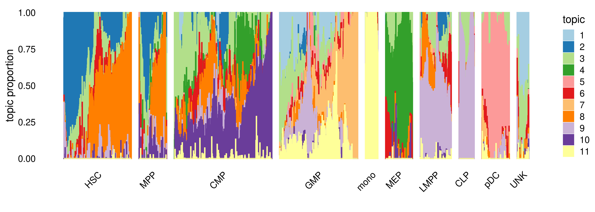
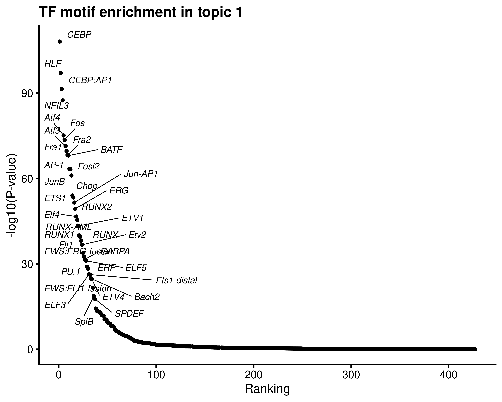
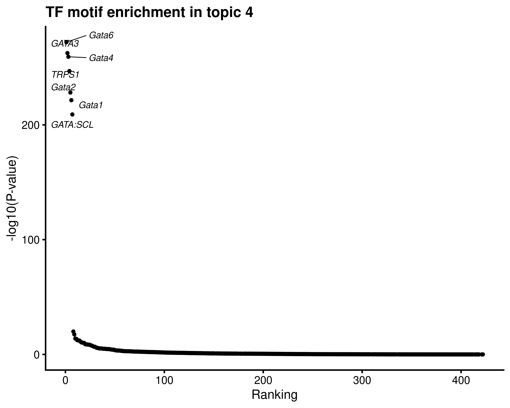

Selected figures for Buenrostro et al (2018) scATAC-seq results
Kaixuan Luo
Last updated: 2022-02-24
Checks: 7 0
Knit directory: scATACseq-topics/
This reproducible R Markdown analysis was created with workflowr (version 1.7.0). The Checks tab describes the reproducibility checks that were applied when the results were created. The Past versions tab lists the development history.
Great! Since the R Markdown file has been committed to the Git repository, you know the exact version of the code that produced these results.
Great job! The global environment was empty. Objects defined in the global environment can affect the analysis in your R Markdown file in unknown ways. For reproduciblity it's best to always run the code in an empty environment.
The command set.seed(20200729) was run prior to running the code in the R Markdown file. Setting a seed ensures that any results that rely on randomness, e.g. subsampling or permutations, are reproducible.
Great job! Recording the operating system, R version, and package versions is critical for reproducibility.
Nice! There were no cached chunks for this analysis, so you can be confident that you successfully produced the results during this run.
Great job! Using relative paths to the files within your workflowr project makes it easier to run your code on other machines.
Great! You are using Git for version control. Tracking code development and connecting the code version to the results is critical for reproducibility.
The results in this page were generated with repository version 1e5d6d3. See the Past versions tab to see a history of the changes made to the R Markdown and HTML files.
Note that you need to be careful to ensure that all relevant files for the analysis have been committed to Git prior to generating the results (you can use wflow_publish or wflow_git_commit). workflowr only checks the R Markdown file, but you know if there are other scripts or data files that it depends on. Below is the status of the Git repository when the results were generated:
Ignored files:
Ignored: .DS_Store
Ignored: .Rhistory
Ignored: .Rproj.user/
Ignored: analysis/figure/
Ignored: output/plotly/Buenrostro_2018_Chen2019pipeline_v2/
Ignored: output/plotly/Cusanovich2018_v2/
Untracked files:
Untracked: analysis/clusters_Buenrostro2018_k10_Chen2019pipeline.Rmd
Untracked: analysis/process_data_Buenrostro2018_Chen2019.Rmd
Untracked: output/clustering-Cusanovich2018.rds
Untracked: paper/
Unstaged changes:
Modified: .gitignore
Modified: analysis/assess_fits_Buenrostro2018_Chen2019pipeline.Rmd
Modified: analysis/clusters_Cusanovich2018_k13.Rmd
Modified: analysis/gene_analysis_Buenrostro2018_Chen2019pipeline.Rmd
Modified: analysis/gene_analysis_Cusanovich2018.Rmd
Modified: analysis/index.Rmd
Modified: analysis/motif_analysis_Buenrostro2018_Chen2019pipeline.Rmd
Modified: analysis/motif_analysis_Cusanovich2018.Rmd
Modified: analysis/plots_Cusanovich2018.Rmd
Modified: code/functions_for_assessing_fits.R
Deleted: output/plotly/Cusanovich2018/gsea_topic_10_genebody-sum_files/crosstalk-1.1.0.1/css/crosstalk.css
Deleted: output/plotly/Cusanovich2018/gsea_topic_10_genebody-sum_files/crosstalk-1.1.0.1/js/crosstalk.js
Deleted: output/plotly/Cusanovich2018/gsea_topic_10_genebody-sum_files/crosstalk-1.1.0.1/js/crosstalk.js.map
Deleted: output/plotly/Cusanovich2018/gsea_topic_10_genebody-sum_files/crosstalk-1.1.0.1/js/crosstalk.min.js
Deleted: output/plotly/Cusanovich2018/gsea_topic_10_genebody-sum_files/crosstalk-1.1.0.1/js/crosstalk.min.js.map
Deleted: output/plotly/Cusanovich2018/gsea_topic_10_genebody-sum_files/htmlwidgets-1.5.3/htmlwidgets.js
Deleted: output/plotly/Cusanovich2018/gsea_topic_10_genebody-sum_files/jquery-1.11.3/jquery-AUTHORS.txt
Deleted: output/plotly/Cusanovich2018/gsea_topic_10_genebody-sum_files/jquery-1.11.3/jquery.js
Deleted: output/plotly/Cusanovich2018/gsea_topic_10_genebody-sum_files/jquery-1.11.3/jquery.min.js
Deleted: output/plotly/Cusanovich2018/gsea_topic_10_genebody-sum_files/jquery-1.11.3/jquery.min.map
Deleted: output/plotly/Cusanovich2018/gsea_topic_10_genebody-sum_files/plotly-binding-4.9.2.1/plotly.js
Deleted: output/plotly/Cusanovich2018/gsea_topic_10_genebody-sum_files/plotly-htmlwidgets-css-1.52.2/plotly-htmlwidgets.css
Deleted: output/plotly/Cusanovich2018/gsea_topic_10_genebody-sum_files/plotly-main-1.52.2/plotly-latest.min.js
Deleted: output/plotly/Cusanovich2018/gsea_topic_10_genebody-sum_files/typedarray-0.1/typedarray.min.js
Deleted: output/plotly/Cusanovich2018/gsea_topic_10_tss-sum_files/crosstalk-1.1.0.1/css/crosstalk.css
Deleted: output/plotly/Cusanovich2018/gsea_topic_10_tss-sum_files/crosstalk-1.1.0.1/js/crosstalk.js
Deleted: output/plotly/Cusanovich2018/gsea_topic_10_tss-sum_files/crosstalk-1.1.0.1/js/crosstalk.js.map
Deleted: output/plotly/Cusanovich2018/gsea_topic_10_tss-sum_files/crosstalk-1.1.0.1/js/crosstalk.min.js
Deleted: output/plotly/Cusanovich2018/gsea_topic_10_tss-sum_files/crosstalk-1.1.0.1/js/crosstalk.min.js.map
Deleted: output/plotly/Cusanovich2018/gsea_topic_10_tss-sum_files/htmlwidgets-1.5.3/htmlwidgets.js
Deleted: output/plotly/Cusanovich2018/gsea_topic_10_tss-sum_files/jquery-1.11.3/jquery-AUTHORS.txt
Deleted: output/plotly/Cusanovich2018/gsea_topic_10_tss-sum_files/jquery-1.11.3/jquery.js
Deleted: output/plotly/Cusanovich2018/gsea_topic_10_tss-sum_files/jquery-1.11.3/jquery.min.js
Deleted: output/plotly/Cusanovich2018/gsea_topic_10_tss-sum_files/jquery-1.11.3/jquery.min.map
Deleted: output/plotly/Cusanovich2018/gsea_topic_10_tss-sum_files/plotly-binding-4.9.2.1/plotly.js
Deleted: output/plotly/Cusanovich2018/gsea_topic_10_tss-sum_files/plotly-htmlwidgets-css-1.52.2/plotly-htmlwidgets.css
Deleted: output/plotly/Cusanovich2018/gsea_topic_10_tss-sum_files/plotly-main-1.52.2/plotly-latest.min.js
Deleted: output/plotly/Cusanovich2018/gsea_topic_10_tss-sum_files/typedarray-0.1/typedarray.min.js
Deleted: output/plotly/Cusanovich2018/gsea_topic_11_genebody-sum_files/crosstalk-1.1.0.1/css/crosstalk.css
Deleted: output/plotly/Cusanovich2018/gsea_topic_11_genebody-sum_files/crosstalk-1.1.0.1/js/crosstalk.js
Deleted: output/plotly/Cusanovich2018/gsea_topic_11_genebody-sum_files/crosstalk-1.1.0.1/js/crosstalk.js.map
Deleted: output/plotly/Cusanovich2018/gsea_topic_11_genebody-sum_files/crosstalk-1.1.0.1/js/crosstalk.min.js
Deleted: output/plotly/Cusanovich2018/gsea_topic_11_genebody-sum_files/crosstalk-1.1.0.1/js/crosstalk.min.js.map
Deleted: output/plotly/Cusanovich2018/gsea_topic_11_genebody-sum_files/htmlwidgets-1.5.3/htmlwidgets.js
Deleted: output/plotly/Cusanovich2018/gsea_topic_11_genebody-sum_files/jquery-1.11.3/jquery-AUTHORS.txt
Deleted: output/plotly/Cusanovich2018/gsea_topic_11_genebody-sum_files/jquery-1.11.3/jquery.js
Deleted: output/plotly/Cusanovich2018/gsea_topic_11_genebody-sum_files/jquery-1.11.3/jquery.min.js
Deleted: output/plotly/Cusanovich2018/gsea_topic_11_genebody-sum_files/jquery-1.11.3/jquery.min.map
Deleted: output/plotly/Cusanovich2018/gsea_topic_11_genebody-sum_files/plotly-binding-4.9.2.1/plotly.js
Deleted: output/plotly/Cusanovich2018/gsea_topic_11_genebody-sum_files/plotly-htmlwidgets-css-1.52.2/plotly-htmlwidgets.css
Deleted: output/plotly/Cusanovich2018/gsea_topic_11_genebody-sum_files/plotly-main-1.52.2/plotly-latest.min.js
Deleted: output/plotly/Cusanovich2018/gsea_topic_11_genebody-sum_files/typedarray-0.1/typedarray.min.js
Deleted: output/plotly/Cusanovich2018/gsea_topic_11_tss-sum_files/crosstalk-1.1.0.1/css/crosstalk.css
Deleted: output/plotly/Cusanovich2018/gsea_topic_11_tss-sum_files/crosstalk-1.1.0.1/js/crosstalk.js
Deleted: output/plotly/Cusanovich2018/gsea_topic_11_tss-sum_files/crosstalk-1.1.0.1/js/crosstalk.js.map
Deleted: output/plotly/Cusanovich2018/gsea_topic_11_tss-sum_files/crosstalk-1.1.0.1/js/crosstalk.min.js
Deleted: output/plotly/Cusanovich2018/gsea_topic_11_tss-sum_files/crosstalk-1.1.0.1/js/crosstalk.min.js.map
Deleted: output/plotly/Cusanovich2018/gsea_topic_11_tss-sum_files/htmlwidgets-1.5.3/htmlwidgets.js
Deleted: output/plotly/Cusanovich2018/gsea_topic_11_tss-sum_files/jquery-1.11.3/jquery-AUTHORS.txt
Deleted: output/plotly/Cusanovich2018/gsea_topic_11_tss-sum_files/jquery-1.11.3/jquery.js
Deleted: output/plotly/Cusanovich2018/gsea_topic_11_tss-sum_files/jquery-1.11.3/jquery.min.js
Deleted: output/plotly/Cusanovich2018/gsea_topic_11_tss-sum_files/jquery-1.11.3/jquery.min.map
Deleted: output/plotly/Cusanovich2018/gsea_topic_11_tss-sum_files/plotly-binding-4.9.2.1/plotly.js
Deleted: output/plotly/Cusanovich2018/gsea_topic_11_tss-sum_files/plotly-htmlwidgets-css-1.52.2/plotly-htmlwidgets.css
Deleted: output/plotly/Cusanovich2018/gsea_topic_11_tss-sum_files/plotly-main-1.52.2/plotly-latest.min.js
Deleted: output/plotly/Cusanovich2018/gsea_topic_11_tss-sum_files/typedarray-0.1/typedarray.min.js
Deleted: output/plotly/Cusanovich2018/gsea_topic_12_genebody-sum_files/crosstalk-1.1.0.1/css/crosstalk.css
Deleted: output/plotly/Cusanovich2018/gsea_topic_12_genebody-sum_files/crosstalk-1.1.0.1/js/crosstalk.js
Deleted: output/plotly/Cusanovich2018/gsea_topic_12_genebody-sum_files/crosstalk-1.1.0.1/js/crosstalk.js.map
Deleted: output/plotly/Cusanovich2018/gsea_topic_12_genebody-sum_files/crosstalk-1.1.0.1/js/crosstalk.min.js
Deleted: output/plotly/Cusanovich2018/gsea_topic_12_genebody-sum_files/crosstalk-1.1.0.1/js/crosstalk.min.js.map
Deleted: output/plotly/Cusanovich2018/gsea_topic_12_genebody-sum_files/htmlwidgets-1.5.3/htmlwidgets.js
Deleted: output/plotly/Cusanovich2018/gsea_topic_12_genebody-sum_files/jquery-1.11.3/jquery-AUTHORS.txt
Deleted: output/plotly/Cusanovich2018/gsea_topic_12_genebody-sum_files/jquery-1.11.3/jquery.js
Deleted: output/plotly/Cusanovich2018/gsea_topic_12_genebody-sum_files/jquery-1.11.3/jquery.min.js
Deleted: output/plotly/Cusanovich2018/gsea_topic_12_genebody-sum_files/jquery-1.11.3/jquery.min.map
Deleted: output/plotly/Cusanovich2018/gsea_topic_12_genebody-sum_files/plotly-binding-4.9.2.1/plotly.js
Deleted: output/plotly/Cusanovich2018/gsea_topic_12_genebody-sum_files/plotly-htmlwidgets-css-1.52.2/plotly-htmlwidgets.css
Deleted: output/plotly/Cusanovich2018/gsea_topic_12_genebody-sum_files/plotly-main-1.52.2/plotly-latest.min.js
Deleted: output/plotly/Cusanovich2018/gsea_topic_12_genebody-sum_files/typedarray-0.1/typedarray.min.js
Deleted: output/plotly/Cusanovich2018/gsea_topic_12_tss-sum_files/crosstalk-1.1.0.1/css/crosstalk.css
Deleted: output/plotly/Cusanovich2018/gsea_topic_12_tss-sum_files/crosstalk-1.1.0.1/js/crosstalk.js
Deleted: output/plotly/Cusanovich2018/gsea_topic_12_tss-sum_files/crosstalk-1.1.0.1/js/crosstalk.js.map
Deleted: output/plotly/Cusanovich2018/gsea_topic_12_tss-sum_files/crosstalk-1.1.0.1/js/crosstalk.min.js
Deleted: output/plotly/Cusanovich2018/gsea_topic_12_tss-sum_files/crosstalk-1.1.0.1/js/crosstalk.min.js.map
Deleted: output/plotly/Cusanovich2018/gsea_topic_12_tss-sum_files/htmlwidgets-1.5.3/htmlwidgets.js
Deleted: output/plotly/Cusanovich2018/gsea_topic_12_tss-sum_files/jquery-1.11.3/jquery-AUTHORS.txt
Deleted: output/plotly/Cusanovich2018/gsea_topic_12_tss-sum_files/jquery-1.11.3/jquery.js
Deleted: output/plotly/Cusanovich2018/gsea_topic_12_tss-sum_files/jquery-1.11.3/jquery.min.js
Deleted: output/plotly/Cusanovich2018/gsea_topic_12_tss-sum_files/jquery-1.11.3/jquery.min.map
Deleted: output/plotly/Cusanovich2018/gsea_topic_12_tss-sum_files/plotly-binding-4.9.2.1/plotly.js
Deleted: output/plotly/Cusanovich2018/gsea_topic_12_tss-sum_files/plotly-htmlwidgets-css-1.52.2/plotly-htmlwidgets.css
Deleted: output/plotly/Cusanovich2018/gsea_topic_12_tss-sum_files/plotly-main-1.52.2/plotly-latest.min.js
Deleted: output/plotly/Cusanovich2018/gsea_topic_12_tss-sum_files/typedarray-0.1/typedarray.min.js
Deleted: output/plotly/Cusanovich2018/gsea_topic_13_genebody-sum_files/crosstalk-1.1.0.1/css/crosstalk.css
Deleted: output/plotly/Cusanovich2018/gsea_topic_13_genebody-sum_files/crosstalk-1.1.0.1/js/crosstalk.js
Deleted: output/plotly/Cusanovich2018/gsea_topic_13_genebody-sum_files/crosstalk-1.1.0.1/js/crosstalk.js.map
Deleted: output/plotly/Cusanovich2018/gsea_topic_13_genebody-sum_files/crosstalk-1.1.0.1/js/crosstalk.min.js
Deleted: output/plotly/Cusanovich2018/gsea_topic_13_genebody-sum_files/crosstalk-1.1.0.1/js/crosstalk.min.js.map
Deleted: output/plotly/Cusanovich2018/gsea_topic_13_genebody-sum_files/htmlwidgets-1.5.3/htmlwidgets.js
Deleted: output/plotly/Cusanovich2018/gsea_topic_13_genebody-sum_files/jquery-1.11.3/jquery-AUTHORS.txt
Deleted: output/plotly/Cusanovich2018/gsea_topic_13_genebody-sum_files/jquery-1.11.3/jquery.js
Deleted: output/plotly/Cusanovich2018/gsea_topic_13_genebody-sum_files/jquery-1.11.3/jquery.min.js
Deleted: output/plotly/Cusanovich2018/gsea_topic_13_genebody-sum_files/jquery-1.11.3/jquery.min.map
Deleted: output/plotly/Cusanovich2018/gsea_topic_13_genebody-sum_files/plotly-binding-4.9.2.1/plotly.js
Deleted: output/plotly/Cusanovich2018/gsea_topic_13_genebody-sum_files/plotly-htmlwidgets-css-1.52.2/plotly-htmlwidgets.css
Deleted: output/plotly/Cusanovich2018/gsea_topic_13_genebody-sum_files/plotly-main-1.52.2/plotly-latest.min.js
Deleted: output/plotly/Cusanovich2018/gsea_topic_13_genebody-sum_files/typedarray-0.1/typedarray.min.js
Deleted: output/plotly/Cusanovich2018/gsea_topic_13_tss-sum_files/crosstalk-1.1.0.1/css/crosstalk.css
Deleted: output/plotly/Cusanovich2018/gsea_topic_13_tss-sum_files/crosstalk-1.1.0.1/js/crosstalk.js
Deleted: output/plotly/Cusanovich2018/gsea_topic_13_tss-sum_files/crosstalk-1.1.0.1/js/crosstalk.js.map
Deleted: output/plotly/Cusanovich2018/gsea_topic_13_tss-sum_files/crosstalk-1.1.0.1/js/crosstalk.min.js
Deleted: output/plotly/Cusanovich2018/gsea_topic_13_tss-sum_files/crosstalk-1.1.0.1/js/crosstalk.min.js.map
Deleted: output/plotly/Cusanovich2018/gsea_topic_13_tss-sum_files/htmlwidgets-1.5.3/htmlwidgets.js
Deleted: output/plotly/Cusanovich2018/gsea_topic_13_tss-sum_files/jquery-1.11.3/jquery-AUTHORS.txt
Deleted: output/plotly/Cusanovich2018/gsea_topic_13_tss-sum_files/jquery-1.11.3/jquery.js
Deleted: output/plotly/Cusanovich2018/gsea_topic_13_tss-sum_files/jquery-1.11.3/jquery.min.js
Deleted: output/plotly/Cusanovich2018/gsea_topic_13_tss-sum_files/jquery-1.11.3/jquery.min.map
Deleted: output/plotly/Cusanovich2018/gsea_topic_13_tss-sum_files/plotly-binding-4.9.2.1/plotly.js
Deleted: output/plotly/Cusanovich2018/gsea_topic_13_tss-sum_files/plotly-htmlwidgets-css-1.52.2/plotly-htmlwidgets.css
Deleted: output/plotly/Cusanovich2018/gsea_topic_13_tss-sum_files/plotly-main-1.52.2/plotly-latest.min.js
Deleted: output/plotly/Cusanovich2018/gsea_topic_13_tss-sum_files/typedarray-0.1/typedarray.min.js
Deleted: output/plotly/Cusanovich2018/gsea_topic_1_genebody-sum_files/crosstalk-1.1.0.1/css/crosstalk.css
Deleted: output/plotly/Cusanovich2018/gsea_topic_1_genebody-sum_files/crosstalk-1.1.0.1/js/crosstalk.js
Deleted: output/plotly/Cusanovich2018/gsea_topic_1_genebody-sum_files/crosstalk-1.1.0.1/js/crosstalk.js.map
Deleted: output/plotly/Cusanovich2018/gsea_topic_1_genebody-sum_files/crosstalk-1.1.0.1/js/crosstalk.min.js
Deleted: output/plotly/Cusanovich2018/gsea_topic_1_genebody-sum_files/crosstalk-1.1.0.1/js/crosstalk.min.js.map
Deleted: output/plotly/Cusanovich2018/gsea_topic_1_genebody-sum_files/htmlwidgets-1.5.3/htmlwidgets.js
Deleted: output/plotly/Cusanovich2018/gsea_topic_1_genebody-sum_files/jquery-1.11.3/jquery-AUTHORS.txt
Deleted: output/plotly/Cusanovich2018/gsea_topic_1_genebody-sum_files/jquery-1.11.3/jquery.js
Deleted: output/plotly/Cusanovich2018/gsea_topic_1_genebody-sum_files/jquery-1.11.3/jquery.min.js
Deleted: output/plotly/Cusanovich2018/gsea_topic_1_genebody-sum_files/jquery-1.11.3/jquery.min.map
Deleted: output/plotly/Cusanovich2018/gsea_topic_1_genebody-sum_files/plotly-binding-4.9.2.1/plotly.js
Deleted: output/plotly/Cusanovich2018/gsea_topic_1_genebody-sum_files/plotly-htmlwidgets-css-1.52.2/plotly-htmlwidgets.css
Deleted: output/plotly/Cusanovich2018/gsea_topic_1_genebody-sum_files/plotly-main-1.52.2/plotly-latest.min.js
Deleted: output/plotly/Cusanovich2018/gsea_topic_1_genebody-sum_files/typedarray-0.1/typedarray.min.js
Deleted: output/plotly/Cusanovich2018/gsea_topic_1_tss-sum_files/crosstalk-1.1.0.1/css/crosstalk.css
Deleted: output/plotly/Cusanovich2018/gsea_topic_1_tss-sum_files/crosstalk-1.1.0.1/js/crosstalk.js
Deleted: output/plotly/Cusanovich2018/gsea_topic_1_tss-sum_files/crosstalk-1.1.0.1/js/crosstalk.js.map
Deleted: output/plotly/Cusanovich2018/gsea_topic_1_tss-sum_files/crosstalk-1.1.0.1/js/crosstalk.min.js
Deleted: output/plotly/Cusanovich2018/gsea_topic_1_tss-sum_files/crosstalk-1.1.0.1/js/crosstalk.min.js.map
Deleted: output/plotly/Cusanovich2018/gsea_topic_1_tss-sum_files/htmlwidgets-1.5.3/htmlwidgets.js
Deleted: output/plotly/Cusanovich2018/gsea_topic_1_tss-sum_files/jquery-1.11.3/jquery-AUTHORS.txt
Deleted: output/plotly/Cusanovich2018/gsea_topic_1_tss-sum_files/jquery-1.11.3/jquery.js
Deleted: output/plotly/Cusanovich2018/gsea_topic_1_tss-sum_files/jquery-1.11.3/jquery.min.js
Deleted: output/plotly/Cusanovich2018/gsea_topic_1_tss-sum_files/jquery-1.11.3/jquery.min.map
Deleted: output/plotly/Cusanovich2018/gsea_topic_1_tss-sum_files/plotly-binding-4.9.2.1/plotly.js
Deleted: output/plotly/Cusanovich2018/gsea_topic_1_tss-sum_files/plotly-htmlwidgets-css-1.52.2/plotly-htmlwidgets.css
Deleted: output/plotly/Cusanovich2018/gsea_topic_1_tss-sum_files/plotly-main-1.52.2/plotly-latest.min.js
Deleted: output/plotly/Cusanovich2018/gsea_topic_1_tss-sum_files/typedarray-0.1/typedarray.min.js
Deleted: output/plotly/Cusanovich2018/gsea_topic_2_genebody-sum_files/crosstalk-1.1.0.1/css/crosstalk.css
Deleted: output/plotly/Cusanovich2018/gsea_topic_2_genebody-sum_files/crosstalk-1.1.0.1/js/crosstalk.js
Deleted: output/plotly/Cusanovich2018/gsea_topic_2_genebody-sum_files/crosstalk-1.1.0.1/js/crosstalk.js.map
Deleted: output/plotly/Cusanovich2018/gsea_topic_2_genebody-sum_files/crosstalk-1.1.0.1/js/crosstalk.min.js
Deleted: output/plotly/Cusanovich2018/gsea_topic_2_genebody-sum_files/crosstalk-1.1.0.1/js/crosstalk.min.js.map
Deleted: output/plotly/Cusanovich2018/gsea_topic_2_genebody-sum_files/htmlwidgets-1.5.3/htmlwidgets.js
Deleted: output/plotly/Cusanovich2018/gsea_topic_2_genebody-sum_files/jquery-1.11.3/jquery-AUTHORS.txt
Deleted: output/plotly/Cusanovich2018/gsea_topic_2_genebody-sum_files/jquery-1.11.3/jquery.js
Deleted: output/plotly/Cusanovich2018/gsea_topic_2_genebody-sum_files/jquery-1.11.3/jquery.min.js
Deleted: output/plotly/Cusanovich2018/gsea_topic_2_genebody-sum_files/jquery-1.11.3/jquery.min.map
Deleted: output/plotly/Cusanovich2018/gsea_topic_2_genebody-sum_files/plotly-binding-4.9.2.1/plotly.js
Deleted: output/plotly/Cusanovich2018/gsea_topic_2_genebody-sum_files/plotly-htmlwidgets-css-1.52.2/plotly-htmlwidgets.css
Deleted: output/plotly/Cusanovich2018/gsea_topic_2_genebody-sum_files/plotly-main-1.52.2/plotly-latest.min.js
Deleted: output/plotly/Cusanovich2018/gsea_topic_2_genebody-sum_files/typedarray-0.1/typedarray.min.js
Deleted: output/plotly/Cusanovich2018/gsea_topic_2_tss-sum_files/crosstalk-1.1.0.1/css/crosstalk.css
Deleted: output/plotly/Cusanovich2018/gsea_topic_2_tss-sum_files/crosstalk-1.1.0.1/js/crosstalk.js
Deleted: output/plotly/Cusanovich2018/gsea_topic_2_tss-sum_files/crosstalk-1.1.0.1/js/crosstalk.js.map
Deleted: output/plotly/Cusanovich2018/gsea_topic_2_tss-sum_files/crosstalk-1.1.0.1/js/crosstalk.min.js
Deleted: output/plotly/Cusanovich2018/gsea_topic_2_tss-sum_files/crosstalk-1.1.0.1/js/crosstalk.min.js.map
Deleted: output/plotly/Cusanovich2018/gsea_topic_2_tss-sum_files/htmlwidgets-1.5.3/htmlwidgets.js
Deleted: output/plotly/Cusanovich2018/gsea_topic_2_tss-sum_files/jquery-1.11.3/jquery-AUTHORS.txt
Deleted: output/plotly/Cusanovich2018/gsea_topic_2_tss-sum_files/jquery-1.11.3/jquery.js
Deleted: output/plotly/Cusanovich2018/gsea_topic_2_tss-sum_files/jquery-1.11.3/jquery.min.js
Deleted: output/plotly/Cusanovich2018/gsea_topic_2_tss-sum_files/jquery-1.11.3/jquery.min.map
Deleted: output/plotly/Cusanovich2018/gsea_topic_2_tss-sum_files/plotly-binding-4.9.2.1/plotly.js
Deleted: output/plotly/Cusanovich2018/gsea_topic_2_tss-sum_files/plotly-htmlwidgets-css-1.52.2/plotly-htmlwidgets.css
Deleted: output/plotly/Cusanovich2018/gsea_topic_2_tss-sum_files/plotly-main-1.52.2/plotly-latest.min.js
Deleted: output/plotly/Cusanovich2018/gsea_topic_2_tss-sum_files/typedarray-0.1/typedarray.min.js
Deleted: output/plotly/Cusanovich2018/gsea_topic_3_genebody-sum_files/crosstalk-1.1.0.1/css/crosstalk.css
Deleted: output/plotly/Cusanovich2018/gsea_topic_3_genebody-sum_files/crosstalk-1.1.0.1/js/crosstalk.js
Deleted: output/plotly/Cusanovich2018/gsea_topic_3_genebody-sum_files/crosstalk-1.1.0.1/js/crosstalk.js.map
Deleted: output/plotly/Cusanovich2018/gsea_topic_3_genebody-sum_files/crosstalk-1.1.0.1/js/crosstalk.min.js
Deleted: output/plotly/Cusanovich2018/gsea_topic_3_genebody-sum_files/crosstalk-1.1.0.1/js/crosstalk.min.js.map
Deleted: output/plotly/Cusanovich2018/gsea_topic_3_genebody-sum_files/htmlwidgets-1.5.3/htmlwidgets.js
Deleted: output/plotly/Cusanovich2018/gsea_topic_3_genebody-sum_files/jquery-1.11.3/jquery-AUTHORS.txt
Deleted: output/plotly/Cusanovich2018/gsea_topic_3_genebody-sum_files/jquery-1.11.3/jquery.js
Deleted: output/plotly/Cusanovich2018/gsea_topic_3_genebody-sum_files/jquery-1.11.3/jquery.min.js
Deleted: output/plotly/Cusanovich2018/gsea_topic_3_genebody-sum_files/jquery-1.11.3/jquery.min.map
Deleted: output/plotly/Cusanovich2018/gsea_topic_3_genebody-sum_files/plotly-binding-4.9.2.1/plotly.js
Deleted: output/plotly/Cusanovich2018/gsea_topic_3_genebody-sum_files/plotly-htmlwidgets-css-1.52.2/plotly-htmlwidgets.css
Deleted: output/plotly/Cusanovich2018/gsea_topic_3_genebody-sum_files/plotly-main-1.52.2/plotly-latest.min.js
Deleted: output/plotly/Cusanovich2018/gsea_topic_3_genebody-sum_files/typedarray-0.1/typedarray.min.js
Deleted: output/plotly/Cusanovich2018/gsea_topic_3_tss-sum_files/crosstalk-1.1.0.1/css/crosstalk.css
Deleted: output/plotly/Cusanovich2018/gsea_topic_3_tss-sum_files/crosstalk-1.1.0.1/js/crosstalk.js
Deleted: output/plotly/Cusanovich2018/gsea_topic_3_tss-sum_files/crosstalk-1.1.0.1/js/crosstalk.js.map
Deleted: output/plotly/Cusanovich2018/gsea_topic_3_tss-sum_files/crosstalk-1.1.0.1/js/crosstalk.min.js
Deleted: output/plotly/Cusanovich2018/gsea_topic_3_tss-sum_files/crosstalk-1.1.0.1/js/crosstalk.min.js.map
Deleted: output/plotly/Cusanovich2018/gsea_topic_3_tss-sum_files/htmlwidgets-1.5.3/htmlwidgets.js
Deleted: output/plotly/Cusanovich2018/gsea_topic_3_tss-sum_files/jquery-1.11.3/jquery-AUTHORS.txt
Deleted: output/plotly/Cusanovich2018/gsea_topic_3_tss-sum_files/jquery-1.11.3/jquery.js
Deleted: output/plotly/Cusanovich2018/gsea_topic_3_tss-sum_files/jquery-1.11.3/jquery.min.js
Deleted: output/plotly/Cusanovich2018/gsea_topic_3_tss-sum_files/jquery-1.11.3/jquery.min.map
Deleted: output/plotly/Cusanovich2018/gsea_topic_3_tss-sum_files/plotly-binding-4.9.2.1/plotly.js
Deleted: output/plotly/Cusanovich2018/gsea_topic_3_tss-sum_files/plotly-htmlwidgets-css-1.52.2/plotly-htmlwidgets.css
Deleted: output/plotly/Cusanovich2018/gsea_topic_3_tss-sum_files/plotly-main-1.52.2/plotly-latest.min.js
Deleted: output/plotly/Cusanovich2018/gsea_topic_3_tss-sum_files/typedarray-0.1/typedarray.min.js
Deleted: output/plotly/Cusanovich2018/gsea_topic_4_genebody-sum_files/crosstalk-1.1.0.1/css/crosstalk.css
Deleted: output/plotly/Cusanovich2018/gsea_topic_4_genebody-sum_files/crosstalk-1.1.0.1/js/crosstalk.js
Deleted: output/plotly/Cusanovich2018/gsea_topic_4_genebody-sum_files/crosstalk-1.1.0.1/js/crosstalk.js.map
Deleted: output/plotly/Cusanovich2018/gsea_topic_4_genebody-sum_files/crosstalk-1.1.0.1/js/crosstalk.min.js
Deleted: output/plotly/Cusanovich2018/gsea_topic_4_genebody-sum_files/crosstalk-1.1.0.1/js/crosstalk.min.js.map
Deleted: output/plotly/Cusanovich2018/gsea_topic_4_genebody-sum_files/htmlwidgets-1.5.3/htmlwidgets.js
Deleted: output/plotly/Cusanovich2018/gsea_topic_4_genebody-sum_files/jquery-1.11.3/jquery-AUTHORS.txt
Deleted: output/plotly/Cusanovich2018/gsea_topic_4_genebody-sum_files/jquery-1.11.3/jquery.js
Deleted: output/plotly/Cusanovich2018/gsea_topic_4_genebody-sum_files/jquery-1.11.3/jquery.min.js
Deleted: output/plotly/Cusanovich2018/gsea_topic_4_genebody-sum_files/jquery-1.11.3/jquery.min.map
Deleted: output/plotly/Cusanovich2018/gsea_topic_4_genebody-sum_files/plotly-binding-4.9.2.1/plotly.js
Deleted: output/plotly/Cusanovich2018/gsea_topic_4_genebody-sum_files/plotly-htmlwidgets-css-1.52.2/plotly-htmlwidgets.css
Deleted: output/plotly/Cusanovich2018/gsea_topic_4_genebody-sum_files/plotly-main-1.52.2/plotly-latest.min.js
Deleted: output/plotly/Cusanovich2018/gsea_topic_4_genebody-sum_files/typedarray-0.1/typedarray.min.js
Deleted: output/plotly/Cusanovich2018/gsea_topic_4_tss-sum_files/crosstalk-1.1.0.1/css/crosstalk.css
Deleted: output/plotly/Cusanovich2018/gsea_topic_4_tss-sum_files/crosstalk-1.1.0.1/js/crosstalk.js
Deleted: output/plotly/Cusanovich2018/gsea_topic_4_tss-sum_files/crosstalk-1.1.0.1/js/crosstalk.js.map
Deleted: output/plotly/Cusanovich2018/gsea_topic_4_tss-sum_files/crosstalk-1.1.0.1/js/crosstalk.min.js
Deleted: output/plotly/Cusanovich2018/gsea_topic_4_tss-sum_files/crosstalk-1.1.0.1/js/crosstalk.min.js.map
Deleted: output/plotly/Cusanovich2018/gsea_topic_4_tss-sum_files/htmlwidgets-1.5.3/htmlwidgets.js
Deleted: output/plotly/Cusanovich2018/gsea_topic_4_tss-sum_files/jquery-1.11.3/jquery-AUTHORS.txt
Deleted: output/plotly/Cusanovich2018/gsea_topic_4_tss-sum_files/jquery-1.11.3/jquery.js
Deleted: output/plotly/Cusanovich2018/gsea_topic_4_tss-sum_files/jquery-1.11.3/jquery.min.js
Deleted: output/plotly/Cusanovich2018/gsea_topic_4_tss-sum_files/jquery-1.11.3/jquery.min.map
Deleted: output/plotly/Cusanovich2018/gsea_topic_4_tss-sum_files/plotly-binding-4.9.2.1/plotly.js
Deleted: output/plotly/Cusanovich2018/gsea_topic_4_tss-sum_files/plotly-htmlwidgets-css-1.52.2/plotly-htmlwidgets.css
Deleted: output/plotly/Cusanovich2018/gsea_topic_4_tss-sum_files/plotly-main-1.52.2/plotly-latest.min.js
Deleted: output/plotly/Cusanovich2018/gsea_topic_4_tss-sum_files/typedarray-0.1/typedarray.min.js
Deleted: output/plotly/Cusanovich2018/gsea_topic_5_genebody-sum_files/crosstalk-1.1.0.1/css/crosstalk.css
Deleted: output/plotly/Cusanovich2018/gsea_topic_5_genebody-sum_files/crosstalk-1.1.0.1/js/crosstalk.js
Deleted: output/plotly/Cusanovich2018/gsea_topic_5_genebody-sum_files/crosstalk-1.1.0.1/js/crosstalk.js.map
Deleted: output/plotly/Cusanovich2018/gsea_topic_5_genebody-sum_files/crosstalk-1.1.0.1/js/crosstalk.min.js
Deleted: output/plotly/Cusanovich2018/gsea_topic_5_genebody-sum_files/crosstalk-1.1.0.1/js/crosstalk.min.js.map
Deleted: output/plotly/Cusanovich2018/gsea_topic_5_genebody-sum_files/htmlwidgets-1.5.3/htmlwidgets.js
Deleted: output/plotly/Cusanovich2018/gsea_topic_5_genebody-sum_files/jquery-1.11.3/jquery-AUTHORS.txt
Deleted: output/plotly/Cusanovich2018/gsea_topic_5_genebody-sum_files/jquery-1.11.3/jquery.js
Deleted: output/plotly/Cusanovich2018/gsea_topic_5_genebody-sum_files/jquery-1.11.3/jquery.min.js
Deleted: output/plotly/Cusanovich2018/gsea_topic_5_genebody-sum_files/jquery-1.11.3/jquery.min.map
Deleted: output/plotly/Cusanovich2018/gsea_topic_5_genebody-sum_files/plotly-binding-4.9.2.1/plotly.js
Deleted: output/plotly/Cusanovich2018/gsea_topic_5_genebody-sum_files/plotly-htmlwidgets-css-1.52.2/plotly-htmlwidgets.css
Deleted: output/plotly/Cusanovich2018/gsea_topic_5_genebody-sum_files/plotly-main-1.52.2/plotly-latest.min.js
Deleted: output/plotly/Cusanovich2018/gsea_topic_5_genebody-sum_files/typedarray-0.1/typedarray.min.js
Deleted: output/plotly/Cusanovich2018/gsea_topic_5_tss-sum_files/crosstalk-1.1.0.1/css/crosstalk.css
Deleted: output/plotly/Cusanovich2018/gsea_topic_5_tss-sum_files/crosstalk-1.1.0.1/js/crosstalk.js
Deleted: output/plotly/Cusanovich2018/gsea_topic_5_tss-sum_files/crosstalk-1.1.0.1/js/crosstalk.js.map
Deleted: output/plotly/Cusanovich2018/gsea_topic_5_tss-sum_files/crosstalk-1.1.0.1/js/crosstalk.min.js
Deleted: output/plotly/Cusanovich2018/gsea_topic_5_tss-sum_files/crosstalk-1.1.0.1/js/crosstalk.min.js.map
Deleted: output/plotly/Cusanovich2018/gsea_topic_5_tss-sum_files/htmlwidgets-1.5.3/htmlwidgets.js
Deleted: output/plotly/Cusanovich2018/gsea_topic_5_tss-sum_files/jquery-1.11.3/jquery-AUTHORS.txt
Deleted: output/plotly/Cusanovich2018/gsea_topic_5_tss-sum_files/jquery-1.11.3/jquery.js
Deleted: output/plotly/Cusanovich2018/gsea_topic_5_tss-sum_files/jquery-1.11.3/jquery.min.js
Deleted: output/plotly/Cusanovich2018/gsea_topic_5_tss-sum_files/jquery-1.11.3/jquery.min.map
Deleted: output/plotly/Cusanovich2018/gsea_topic_5_tss-sum_files/plotly-binding-4.9.2.1/plotly.js
Deleted: output/plotly/Cusanovich2018/gsea_topic_5_tss-sum_files/plotly-htmlwidgets-css-1.52.2/plotly-htmlwidgets.css
Deleted: output/plotly/Cusanovich2018/gsea_topic_5_tss-sum_files/plotly-main-1.52.2/plotly-latest.min.js
Deleted: output/plotly/Cusanovich2018/gsea_topic_5_tss-sum_files/typedarray-0.1/typedarray.min.js
Deleted: output/plotly/Cusanovich2018/gsea_topic_6_genebody-sum_files/crosstalk-1.1.0.1/css/crosstalk.css
Deleted: output/plotly/Cusanovich2018/gsea_topic_6_genebody-sum_files/crosstalk-1.1.0.1/js/crosstalk.js
Deleted: output/plotly/Cusanovich2018/gsea_topic_6_genebody-sum_files/crosstalk-1.1.0.1/js/crosstalk.js.map
Deleted: output/plotly/Cusanovich2018/gsea_topic_6_genebody-sum_files/crosstalk-1.1.0.1/js/crosstalk.min.js
Deleted: output/plotly/Cusanovich2018/gsea_topic_6_genebody-sum_files/crosstalk-1.1.0.1/js/crosstalk.min.js.map
Deleted: output/plotly/Cusanovich2018/gsea_topic_6_genebody-sum_files/htmlwidgets-1.5.3/htmlwidgets.js
Deleted: output/plotly/Cusanovich2018/gsea_topic_6_genebody-sum_files/jquery-1.11.3/jquery-AUTHORS.txt
Deleted: output/plotly/Cusanovich2018/gsea_topic_6_genebody-sum_files/jquery-1.11.3/jquery.js
Deleted: output/plotly/Cusanovich2018/gsea_topic_6_genebody-sum_files/jquery-1.11.3/jquery.min.js
Deleted: output/plotly/Cusanovich2018/gsea_topic_6_genebody-sum_files/jquery-1.11.3/jquery.min.map
Deleted: output/plotly/Cusanovich2018/gsea_topic_6_genebody-sum_files/plotly-binding-4.9.2.1/plotly.js
Deleted: output/plotly/Cusanovich2018/gsea_topic_6_genebody-sum_files/plotly-htmlwidgets-css-1.52.2/plotly-htmlwidgets.css
Deleted: output/plotly/Cusanovich2018/gsea_topic_6_genebody-sum_files/plotly-main-1.52.2/plotly-latest.min.js
Deleted: output/plotly/Cusanovich2018/gsea_topic_6_genebody-sum_files/typedarray-0.1/typedarray.min.js
Deleted: output/plotly/Cusanovich2018/gsea_topic_6_tss-sum_files/crosstalk-1.1.0.1/css/crosstalk.css
Deleted: output/plotly/Cusanovich2018/gsea_topic_6_tss-sum_files/crosstalk-1.1.0.1/js/crosstalk.js
Deleted: output/plotly/Cusanovich2018/gsea_topic_6_tss-sum_files/crosstalk-1.1.0.1/js/crosstalk.js.map
Deleted: output/plotly/Cusanovich2018/gsea_topic_6_tss-sum_files/crosstalk-1.1.0.1/js/crosstalk.min.js
Deleted: output/plotly/Cusanovich2018/gsea_topic_6_tss-sum_files/crosstalk-1.1.0.1/js/crosstalk.min.js.map
Deleted: output/plotly/Cusanovich2018/gsea_topic_6_tss-sum_files/htmlwidgets-1.5.3/htmlwidgets.js
Deleted: output/plotly/Cusanovich2018/gsea_topic_6_tss-sum_files/jquery-1.11.3/jquery-AUTHORS.txt
Deleted: output/plotly/Cusanovich2018/gsea_topic_6_tss-sum_files/jquery-1.11.3/jquery.js
Deleted: output/plotly/Cusanovich2018/gsea_topic_6_tss-sum_files/jquery-1.11.3/jquery.min.js
Deleted: output/plotly/Cusanovich2018/gsea_topic_6_tss-sum_files/jquery-1.11.3/jquery.min.map
Deleted: output/plotly/Cusanovich2018/gsea_topic_6_tss-sum_files/plotly-binding-4.9.2.1/plotly.js
Deleted: output/plotly/Cusanovich2018/gsea_topic_6_tss-sum_files/plotly-htmlwidgets-css-1.52.2/plotly-htmlwidgets.css
Deleted: output/plotly/Cusanovich2018/gsea_topic_6_tss-sum_files/plotly-main-1.52.2/plotly-latest.min.js
Deleted: output/plotly/Cusanovich2018/gsea_topic_6_tss-sum_files/typedarray-0.1/typedarray.min.js
Deleted: output/plotly/Cusanovich2018/gsea_topic_7_genebody-sum_files/crosstalk-1.1.0.1/css/crosstalk.css
Deleted: output/plotly/Cusanovich2018/gsea_topic_7_genebody-sum_files/crosstalk-1.1.0.1/js/crosstalk.js
Deleted: output/plotly/Cusanovich2018/gsea_topic_7_genebody-sum_files/crosstalk-1.1.0.1/js/crosstalk.js.map
Deleted: output/plotly/Cusanovich2018/gsea_topic_7_genebody-sum_files/crosstalk-1.1.0.1/js/crosstalk.min.js
Deleted: output/plotly/Cusanovich2018/gsea_topic_7_genebody-sum_files/crosstalk-1.1.0.1/js/crosstalk.min.js.map
Deleted: output/plotly/Cusanovich2018/gsea_topic_7_genebody-sum_files/htmlwidgets-1.5.3/htmlwidgets.js
Deleted: output/plotly/Cusanovich2018/gsea_topic_7_genebody-sum_files/jquery-1.11.3/jquery-AUTHORS.txt
Deleted: output/plotly/Cusanovich2018/gsea_topic_7_genebody-sum_files/jquery-1.11.3/jquery.js
Deleted: output/plotly/Cusanovich2018/gsea_topic_7_genebody-sum_files/jquery-1.11.3/jquery.min.js
Deleted: output/plotly/Cusanovich2018/gsea_topic_7_genebody-sum_files/jquery-1.11.3/jquery.min.map
Deleted: output/plotly/Cusanovich2018/gsea_topic_7_genebody-sum_files/plotly-binding-4.9.2.1/plotly.js
Deleted: output/plotly/Cusanovich2018/gsea_topic_7_genebody-sum_files/plotly-htmlwidgets-css-1.52.2/plotly-htmlwidgets.css
Deleted: output/plotly/Cusanovich2018/gsea_topic_7_genebody-sum_files/plotly-main-1.52.2/plotly-latest.min.js
Deleted: output/plotly/Cusanovich2018/gsea_topic_7_genebody-sum_files/typedarray-0.1/typedarray.min.js
Deleted: output/plotly/Cusanovich2018/gsea_topic_7_tss-sum_files/crosstalk-1.1.0.1/css/crosstalk.css
Deleted: output/plotly/Cusanovich2018/gsea_topic_7_tss-sum_files/crosstalk-1.1.0.1/js/crosstalk.js
Deleted: output/plotly/Cusanovich2018/gsea_topic_7_tss-sum_files/crosstalk-1.1.0.1/js/crosstalk.js.map
Deleted: output/plotly/Cusanovich2018/gsea_topic_7_tss-sum_files/crosstalk-1.1.0.1/js/crosstalk.min.js
Deleted: output/plotly/Cusanovich2018/gsea_topic_7_tss-sum_files/crosstalk-1.1.0.1/js/crosstalk.min.js.map
Deleted: output/plotly/Cusanovich2018/gsea_topic_7_tss-sum_files/htmlwidgets-1.5.3/htmlwidgets.js
Deleted: output/plotly/Cusanovich2018/gsea_topic_7_tss-sum_files/jquery-1.11.3/jquery-AUTHORS.txt
Deleted: output/plotly/Cusanovich2018/gsea_topic_7_tss-sum_files/jquery-1.11.3/jquery.js
Deleted: output/plotly/Cusanovich2018/gsea_topic_7_tss-sum_files/jquery-1.11.3/jquery.min.js
Deleted: output/plotly/Cusanovich2018/gsea_topic_7_tss-sum_files/jquery-1.11.3/jquery.min.map
Deleted: output/plotly/Cusanovich2018/gsea_topic_7_tss-sum_files/plotly-binding-4.9.2.1/plotly.js
Deleted: output/plotly/Cusanovich2018/gsea_topic_7_tss-sum_files/plotly-htmlwidgets-css-1.52.2/plotly-htmlwidgets.css
Deleted: output/plotly/Cusanovich2018/gsea_topic_7_tss-sum_files/plotly-main-1.52.2/plotly-latest.min.js
Deleted: output/plotly/Cusanovich2018/gsea_topic_7_tss-sum_files/typedarray-0.1/typedarray.min.js
Deleted: output/plotly/Cusanovich2018/gsea_topic_8_genebody-sum_files/crosstalk-1.1.0.1/css/crosstalk.css
Deleted: output/plotly/Cusanovich2018/gsea_topic_8_genebody-sum_files/crosstalk-1.1.0.1/js/crosstalk.js
Deleted: output/plotly/Cusanovich2018/gsea_topic_8_genebody-sum_files/crosstalk-1.1.0.1/js/crosstalk.js.map
Deleted: output/plotly/Cusanovich2018/gsea_topic_8_genebody-sum_files/crosstalk-1.1.0.1/js/crosstalk.min.js
Deleted: output/plotly/Cusanovich2018/gsea_topic_8_genebody-sum_files/crosstalk-1.1.0.1/js/crosstalk.min.js.map
Deleted: output/plotly/Cusanovich2018/gsea_topic_8_genebody-sum_files/htmlwidgets-1.5.3/htmlwidgets.js
Deleted: output/plotly/Cusanovich2018/gsea_topic_8_genebody-sum_files/jquery-1.11.3/jquery-AUTHORS.txt
Deleted: output/plotly/Cusanovich2018/gsea_topic_8_genebody-sum_files/jquery-1.11.3/jquery.js
Deleted: output/plotly/Cusanovich2018/gsea_topic_8_genebody-sum_files/jquery-1.11.3/jquery.min.js
Deleted: output/plotly/Cusanovich2018/gsea_topic_8_genebody-sum_files/jquery-1.11.3/jquery.min.map
Deleted: output/plotly/Cusanovich2018/gsea_topic_8_genebody-sum_files/plotly-binding-4.9.2.1/plotly.js
Deleted: output/plotly/Cusanovich2018/gsea_topic_8_genebody-sum_files/plotly-htmlwidgets-css-1.52.2/plotly-htmlwidgets.css
Deleted: output/plotly/Cusanovich2018/gsea_topic_8_genebody-sum_files/plotly-main-1.52.2/plotly-latest.min.js
Deleted: output/plotly/Cusanovich2018/gsea_topic_8_genebody-sum_files/typedarray-0.1/typedarray.min.js
Deleted: output/plotly/Cusanovich2018/gsea_topic_8_tss-sum_files/crosstalk-1.1.0.1/css/crosstalk.css
Deleted: output/plotly/Cusanovich2018/gsea_topic_8_tss-sum_files/crosstalk-1.1.0.1/js/crosstalk.js
Deleted: output/plotly/Cusanovich2018/gsea_topic_8_tss-sum_files/crosstalk-1.1.0.1/js/crosstalk.js.map
Deleted: output/plotly/Cusanovich2018/gsea_topic_8_tss-sum_files/crosstalk-1.1.0.1/js/crosstalk.min.js
Deleted: output/plotly/Cusanovich2018/gsea_topic_8_tss-sum_files/crosstalk-1.1.0.1/js/crosstalk.min.js.map
Deleted: output/plotly/Cusanovich2018/gsea_topic_8_tss-sum_files/htmlwidgets-1.5.3/htmlwidgets.js
Deleted: output/plotly/Cusanovich2018/gsea_topic_8_tss-sum_files/jquery-1.11.3/jquery-AUTHORS.txt
Deleted: output/plotly/Cusanovich2018/gsea_topic_8_tss-sum_files/jquery-1.11.3/jquery.js
Deleted: output/plotly/Cusanovich2018/gsea_topic_8_tss-sum_files/jquery-1.11.3/jquery.min.js
Deleted: output/plotly/Cusanovich2018/gsea_topic_8_tss-sum_files/jquery-1.11.3/jquery.min.map
Deleted: output/plotly/Cusanovich2018/gsea_topic_8_tss-sum_files/plotly-binding-4.9.2.1/plotly.js
Deleted: output/plotly/Cusanovich2018/gsea_topic_8_tss-sum_files/plotly-htmlwidgets-css-1.52.2/plotly-htmlwidgets.css
Deleted: output/plotly/Cusanovich2018/gsea_topic_8_tss-sum_files/plotly-main-1.52.2/plotly-latest.min.js
Deleted: output/plotly/Cusanovich2018/gsea_topic_8_tss-sum_files/typedarray-0.1/typedarray.min.js
Deleted: output/plotly/Cusanovich2018/gsea_topic_9_genebody-sum_files/crosstalk-1.1.0.1/css/crosstalk.css
Deleted: output/plotly/Cusanovich2018/gsea_topic_9_genebody-sum_files/crosstalk-1.1.0.1/js/crosstalk.js
Deleted: output/plotly/Cusanovich2018/gsea_topic_9_genebody-sum_files/crosstalk-1.1.0.1/js/crosstalk.js.map
Deleted: output/plotly/Cusanovich2018/gsea_topic_9_genebody-sum_files/crosstalk-1.1.0.1/js/crosstalk.min.js
Deleted: output/plotly/Cusanovich2018/gsea_topic_9_genebody-sum_files/crosstalk-1.1.0.1/js/crosstalk.min.js.map
Deleted: output/plotly/Cusanovich2018/gsea_topic_9_genebody-sum_files/htmlwidgets-1.5.3/htmlwidgets.js
Deleted: output/plotly/Cusanovich2018/gsea_topic_9_genebody-sum_files/jquery-1.11.3/jquery-AUTHORS.txt
Deleted: output/plotly/Cusanovich2018/gsea_topic_9_genebody-sum_files/jquery-1.11.3/jquery.js
Deleted: output/plotly/Cusanovich2018/gsea_topic_9_genebody-sum_files/jquery-1.11.3/jquery.min.js
Deleted: output/plotly/Cusanovich2018/gsea_topic_9_genebody-sum_files/jquery-1.11.3/jquery.min.map
Deleted: output/plotly/Cusanovich2018/gsea_topic_9_genebody-sum_files/plotly-binding-4.9.2.1/plotly.js
Deleted: output/plotly/Cusanovich2018/gsea_topic_9_genebody-sum_files/plotly-htmlwidgets-css-1.52.2/plotly-htmlwidgets.css
Deleted: output/plotly/Cusanovich2018/gsea_topic_9_genebody-sum_files/plotly-main-1.52.2/plotly-latest.min.js
Deleted: output/plotly/Cusanovich2018/gsea_topic_9_genebody-sum_files/typedarray-0.1/typedarray.min.js
Deleted: output/plotly/Cusanovich2018/gsea_topic_9_tss-sum_files/crosstalk-1.1.0.1/css/crosstalk.css
Deleted: output/plotly/Cusanovich2018/gsea_topic_9_tss-sum_files/crosstalk-1.1.0.1/js/crosstalk.js
Deleted: output/plotly/Cusanovich2018/gsea_topic_9_tss-sum_files/crosstalk-1.1.0.1/js/crosstalk.js.map
Deleted: output/plotly/Cusanovich2018/gsea_topic_9_tss-sum_files/crosstalk-1.1.0.1/js/crosstalk.min.js
Deleted: output/plotly/Cusanovich2018/gsea_topic_9_tss-sum_files/crosstalk-1.1.0.1/js/crosstalk.min.js.map
Deleted: output/plotly/Cusanovich2018/gsea_topic_9_tss-sum_files/htmlwidgets-1.5.3/htmlwidgets.js
Deleted: output/plotly/Cusanovich2018/gsea_topic_9_tss-sum_files/jquery-1.11.3/jquery-AUTHORS.txt
Deleted: output/plotly/Cusanovich2018/gsea_topic_9_tss-sum_files/jquery-1.11.3/jquery.js
Deleted: output/plotly/Cusanovich2018/gsea_topic_9_tss-sum_files/jquery-1.11.3/jquery.min.js
Deleted: output/plotly/Cusanovich2018/gsea_topic_9_tss-sum_files/jquery-1.11.3/jquery.min.map
Deleted: output/plotly/Cusanovich2018/gsea_topic_9_tss-sum_files/plotly-binding-4.9.2.1/plotly.js
Deleted: output/plotly/Cusanovich2018/gsea_topic_9_tss-sum_files/plotly-htmlwidgets-css-1.52.2/plotly-htmlwidgets.css
Deleted: output/plotly/Cusanovich2018/gsea_topic_9_tss-sum_files/plotly-main-1.52.2/plotly-latest.min.js
Deleted: output/plotly/Cusanovich2018/gsea_topic_9_tss-sum_files/typedarray-0.1/typedarray.min.js
Deleted: output/plotly/Cusanovich2018/volcano_topic_10_genebody-sum_files/crosstalk-1.1.0.1/css/crosstalk.css
Deleted: output/plotly/Cusanovich2018/volcano_topic_10_genebody-sum_files/crosstalk-1.1.0.1/js/crosstalk.js
Deleted: output/plotly/Cusanovich2018/volcano_topic_10_genebody-sum_files/crosstalk-1.1.0.1/js/crosstalk.js.map
Deleted: output/plotly/Cusanovich2018/volcano_topic_10_genebody-sum_files/crosstalk-1.1.0.1/js/crosstalk.min.js
Deleted: output/plotly/Cusanovich2018/volcano_topic_10_genebody-sum_files/crosstalk-1.1.0.1/js/crosstalk.min.js.map
Deleted: output/plotly/Cusanovich2018/volcano_topic_10_genebody-sum_files/htmlwidgets-1.5.3/htmlwidgets.js
Deleted: output/plotly/Cusanovich2018/volcano_topic_10_genebody-sum_files/jquery-1.11.3/jquery-AUTHORS.txt
Deleted: output/plotly/Cusanovich2018/volcano_topic_10_genebody-sum_files/jquery-1.11.3/jquery.js
Deleted: output/plotly/Cusanovich2018/volcano_topic_10_genebody-sum_files/jquery-1.11.3/jquery.min.js
Deleted: output/plotly/Cusanovich2018/volcano_topic_10_genebody-sum_files/jquery-1.11.3/jquery.min.map
Deleted: output/plotly/Cusanovich2018/volcano_topic_10_genebody-sum_files/plotly-binding-4.9.2.1/plotly.js
Deleted: output/plotly/Cusanovich2018/volcano_topic_10_genebody-sum_files/plotly-htmlwidgets-css-1.52.2/plotly-htmlwidgets.css
Deleted: output/plotly/Cusanovich2018/volcano_topic_10_genebody-sum_files/plotly-main-1.52.2/plotly-latest.min.js
Deleted: output/plotly/Cusanovich2018/volcano_topic_10_genebody-sum_files/typedarray-0.1/typedarray.min.js
Deleted: output/plotly/Cusanovich2018/volcano_topic_10_tss-sum_files/crosstalk-1.1.0.1/css/crosstalk.css
Deleted: output/plotly/Cusanovich2018/volcano_topic_10_tss-sum_files/crosstalk-1.1.0.1/js/crosstalk.js
Deleted: output/plotly/Cusanovich2018/volcano_topic_10_tss-sum_files/crosstalk-1.1.0.1/js/crosstalk.js.map
Deleted: output/plotly/Cusanovich2018/volcano_topic_10_tss-sum_files/crosstalk-1.1.0.1/js/crosstalk.min.js
Deleted: output/plotly/Cusanovich2018/volcano_topic_10_tss-sum_files/crosstalk-1.1.0.1/js/crosstalk.min.js.map
Deleted: output/plotly/Cusanovich2018/volcano_topic_10_tss-sum_files/htmlwidgets-1.5.3/htmlwidgets.js
Deleted: output/plotly/Cusanovich2018/volcano_topic_10_tss-sum_files/jquery-1.11.3/jquery-AUTHORS.txt
Deleted: output/plotly/Cusanovich2018/volcano_topic_10_tss-sum_files/jquery-1.11.3/jquery.js
Deleted: output/plotly/Cusanovich2018/volcano_topic_10_tss-sum_files/jquery-1.11.3/jquery.min.js
Deleted: output/plotly/Cusanovich2018/volcano_topic_10_tss-sum_files/jquery-1.11.3/jquery.min.map
Deleted: output/plotly/Cusanovich2018/volcano_topic_10_tss-sum_files/plotly-binding-4.9.2.1/plotly.js
Deleted: output/plotly/Cusanovich2018/volcano_topic_10_tss-sum_files/plotly-htmlwidgets-css-1.52.2/plotly-htmlwidgets.css
Deleted: output/plotly/Cusanovich2018/volcano_topic_10_tss-sum_files/plotly-main-1.52.2/plotly-latest.min.js
Deleted: output/plotly/Cusanovich2018/volcano_topic_10_tss-sum_files/typedarray-0.1/typedarray.min.js
Deleted: output/plotly/Cusanovich2018/volcano_topic_11_genebody-sum_files/crosstalk-1.1.0.1/css/crosstalk.css
Deleted: output/plotly/Cusanovich2018/volcano_topic_11_genebody-sum_files/crosstalk-1.1.0.1/js/crosstalk.js
Deleted: output/plotly/Cusanovich2018/volcano_topic_11_genebody-sum_files/crosstalk-1.1.0.1/js/crosstalk.js.map
Deleted: output/plotly/Cusanovich2018/volcano_topic_11_genebody-sum_files/crosstalk-1.1.0.1/js/crosstalk.min.js
Deleted: output/plotly/Cusanovich2018/volcano_topic_11_genebody-sum_files/crosstalk-1.1.0.1/js/crosstalk.min.js.map
Deleted: output/plotly/Cusanovich2018/volcano_topic_11_genebody-sum_files/htmlwidgets-1.5.3/htmlwidgets.js
Deleted: output/plotly/Cusanovich2018/volcano_topic_11_genebody-sum_files/jquery-1.11.3/jquery-AUTHORS.txt
Deleted: output/plotly/Cusanovich2018/volcano_topic_11_genebody-sum_files/jquery-1.11.3/jquery.js
Deleted: output/plotly/Cusanovich2018/volcano_topic_11_genebody-sum_files/jquery-1.11.3/jquery.min.js
Deleted: output/plotly/Cusanovich2018/volcano_topic_11_genebody-sum_files/jquery-1.11.3/jquery.min.map
Deleted: output/plotly/Cusanovich2018/volcano_topic_11_genebody-sum_files/plotly-binding-4.9.2.1/plotly.js
Deleted: output/plotly/Cusanovich2018/volcano_topic_11_genebody-sum_files/plotly-htmlwidgets-css-1.52.2/plotly-htmlwidgets.css
Deleted: output/plotly/Cusanovich2018/volcano_topic_11_genebody-sum_files/plotly-main-1.52.2/plotly-latest.min.js
Deleted: output/plotly/Cusanovich2018/volcano_topic_11_genebody-sum_files/typedarray-0.1/typedarray.min.js
Deleted: output/plotly/Cusanovich2018/volcano_topic_11_tss-sum_files/crosstalk-1.1.0.1/css/crosstalk.css
Deleted: output/plotly/Cusanovich2018/volcano_topic_11_tss-sum_files/crosstalk-1.1.0.1/js/crosstalk.js
Deleted: output/plotly/Cusanovich2018/volcano_topic_11_tss-sum_files/crosstalk-1.1.0.1/js/crosstalk.js.map
Deleted: output/plotly/Cusanovich2018/volcano_topic_11_tss-sum_files/crosstalk-1.1.0.1/js/crosstalk.min.js
Deleted: output/plotly/Cusanovich2018/volcano_topic_11_tss-sum_files/crosstalk-1.1.0.1/js/crosstalk.min.js.map
Deleted: output/plotly/Cusanovich2018/volcano_topic_11_tss-sum_files/htmlwidgets-1.5.3/htmlwidgets.js
Deleted: output/plotly/Cusanovich2018/volcano_topic_11_tss-sum_files/jquery-1.11.3/jquery-AUTHORS.txt
Deleted: output/plotly/Cusanovich2018/volcano_topic_11_tss-sum_files/jquery-1.11.3/jquery.js
Deleted: output/plotly/Cusanovich2018/volcano_topic_11_tss-sum_files/jquery-1.11.3/jquery.min.js
Deleted: output/plotly/Cusanovich2018/volcano_topic_11_tss-sum_files/jquery-1.11.3/jquery.min.map
Deleted: output/plotly/Cusanovich2018/volcano_topic_11_tss-sum_files/plotly-binding-4.9.2.1/plotly.js
Deleted: output/plotly/Cusanovich2018/volcano_topic_11_tss-sum_files/plotly-htmlwidgets-css-1.52.2/plotly-htmlwidgets.css
Deleted: output/plotly/Cusanovich2018/volcano_topic_11_tss-sum_files/plotly-main-1.52.2/plotly-latest.min.js
Deleted: output/plotly/Cusanovich2018/volcano_topic_11_tss-sum_files/typedarray-0.1/typedarray.min.js
Deleted: output/plotly/Cusanovich2018/volcano_topic_12_genebody-sum_files/crosstalk-1.1.0.1/css/crosstalk.css
Deleted: output/plotly/Cusanovich2018/volcano_topic_12_genebody-sum_files/crosstalk-1.1.0.1/js/crosstalk.js
Deleted: output/plotly/Cusanovich2018/volcano_topic_12_genebody-sum_files/crosstalk-1.1.0.1/js/crosstalk.js.map
Deleted: output/plotly/Cusanovich2018/volcano_topic_12_genebody-sum_files/crosstalk-1.1.0.1/js/crosstalk.min.js
Deleted: output/plotly/Cusanovich2018/volcano_topic_12_genebody-sum_files/crosstalk-1.1.0.1/js/crosstalk.min.js.map
Deleted: output/plotly/Cusanovich2018/volcano_topic_12_genebody-sum_files/htmlwidgets-1.5.3/htmlwidgets.js
Deleted: output/plotly/Cusanovich2018/volcano_topic_12_genebody-sum_files/jquery-1.11.3/jquery-AUTHORS.txt
Deleted: output/plotly/Cusanovich2018/volcano_topic_12_genebody-sum_files/jquery-1.11.3/jquery.js
Deleted: output/plotly/Cusanovich2018/volcano_topic_12_genebody-sum_files/jquery-1.11.3/jquery.min.js
Deleted: output/plotly/Cusanovich2018/volcano_topic_12_genebody-sum_files/jquery-1.11.3/jquery.min.map
Deleted: output/plotly/Cusanovich2018/volcano_topic_12_genebody-sum_files/plotly-binding-4.9.2.1/plotly.js
Deleted: output/plotly/Cusanovich2018/volcano_topic_12_genebody-sum_files/plotly-htmlwidgets-css-1.52.2/plotly-htmlwidgets.css
Deleted: output/plotly/Cusanovich2018/volcano_topic_12_genebody-sum_files/plotly-main-1.52.2/plotly-latest.min.js
Deleted: output/plotly/Cusanovich2018/volcano_topic_12_genebody-sum_files/typedarray-0.1/typedarray.min.js
Deleted: output/plotly/Cusanovich2018/volcano_topic_12_tss-sum_files/crosstalk-1.1.0.1/css/crosstalk.css
Deleted: output/plotly/Cusanovich2018/volcano_topic_12_tss-sum_files/crosstalk-1.1.0.1/js/crosstalk.js
Deleted: output/plotly/Cusanovich2018/volcano_topic_12_tss-sum_files/crosstalk-1.1.0.1/js/crosstalk.js.map
Deleted: output/plotly/Cusanovich2018/volcano_topic_12_tss-sum_files/crosstalk-1.1.0.1/js/crosstalk.min.js
Deleted: output/plotly/Cusanovich2018/volcano_topic_12_tss-sum_files/crosstalk-1.1.0.1/js/crosstalk.min.js.map
Deleted: output/plotly/Cusanovich2018/volcano_topic_12_tss-sum_files/htmlwidgets-1.5.3/htmlwidgets.js
Deleted: output/plotly/Cusanovich2018/volcano_topic_12_tss-sum_files/jquery-1.11.3/jquery-AUTHORS.txt
Deleted: output/plotly/Cusanovich2018/volcano_topic_12_tss-sum_files/jquery-1.11.3/jquery.js
Deleted: output/plotly/Cusanovich2018/volcano_topic_12_tss-sum_files/jquery-1.11.3/jquery.min.js
Deleted: output/plotly/Cusanovich2018/volcano_topic_12_tss-sum_files/jquery-1.11.3/jquery.min.map
Deleted: output/plotly/Cusanovich2018/volcano_topic_12_tss-sum_files/plotly-binding-4.9.2.1/plotly.js
Deleted: output/plotly/Cusanovich2018/volcano_topic_12_tss-sum_files/plotly-htmlwidgets-css-1.52.2/plotly-htmlwidgets.css
Deleted: output/plotly/Cusanovich2018/volcano_topic_12_tss-sum_files/plotly-main-1.52.2/plotly-latest.min.js
Deleted: output/plotly/Cusanovich2018/volcano_topic_12_tss-sum_files/typedarray-0.1/typedarray.min.js
Deleted: output/plotly/Cusanovich2018/volcano_topic_13_genebody-sum_files/crosstalk-1.1.0.1/css/crosstalk.css
Deleted: output/plotly/Cusanovich2018/volcano_topic_13_genebody-sum_files/crosstalk-1.1.0.1/js/crosstalk.js
Deleted: output/plotly/Cusanovich2018/volcano_topic_13_genebody-sum_files/crosstalk-1.1.0.1/js/crosstalk.js.map
Deleted: output/plotly/Cusanovich2018/volcano_topic_13_genebody-sum_files/crosstalk-1.1.0.1/js/crosstalk.min.js
Deleted: output/plotly/Cusanovich2018/volcano_topic_13_genebody-sum_files/crosstalk-1.1.0.1/js/crosstalk.min.js.map
Deleted: output/plotly/Cusanovich2018/volcano_topic_13_genebody-sum_files/htmlwidgets-1.5.3/htmlwidgets.js
Deleted: output/plotly/Cusanovich2018/volcano_topic_13_genebody-sum_files/jquery-1.11.3/jquery-AUTHORS.txt
Deleted: output/plotly/Cusanovich2018/volcano_topic_13_genebody-sum_files/jquery-1.11.3/jquery.js
Deleted: output/plotly/Cusanovich2018/volcano_topic_13_genebody-sum_files/jquery-1.11.3/jquery.min.js
Deleted: output/plotly/Cusanovich2018/volcano_topic_13_genebody-sum_files/jquery-1.11.3/jquery.min.map
Deleted: output/plotly/Cusanovich2018/volcano_topic_13_genebody-sum_files/plotly-binding-4.9.2.1/plotly.js
Deleted: output/plotly/Cusanovich2018/volcano_topic_13_genebody-sum_files/plotly-htmlwidgets-css-1.52.2/plotly-htmlwidgets.css
Deleted: output/plotly/Cusanovich2018/volcano_topic_13_genebody-sum_files/plotly-main-1.52.2/plotly-latest.min.js
Deleted: output/plotly/Cusanovich2018/volcano_topic_13_genebody-sum_files/typedarray-0.1/typedarray.min.js
Deleted: output/plotly/Cusanovich2018/volcano_topic_13_tss-sum_files/crosstalk-1.1.0.1/css/crosstalk.css
Deleted: output/plotly/Cusanovich2018/volcano_topic_13_tss-sum_files/crosstalk-1.1.0.1/js/crosstalk.js
Deleted: output/plotly/Cusanovich2018/volcano_topic_13_tss-sum_files/crosstalk-1.1.0.1/js/crosstalk.js.map
Deleted: output/plotly/Cusanovich2018/volcano_topic_13_tss-sum_files/crosstalk-1.1.0.1/js/crosstalk.min.js
Deleted: output/plotly/Cusanovich2018/volcano_topic_13_tss-sum_files/crosstalk-1.1.0.1/js/crosstalk.min.js.map
Deleted: output/plotly/Cusanovich2018/volcano_topic_13_tss-sum_files/htmlwidgets-1.5.3/htmlwidgets.js
Deleted: output/plotly/Cusanovich2018/volcano_topic_13_tss-sum_files/jquery-1.11.3/jquery-AUTHORS.txt
Deleted: output/plotly/Cusanovich2018/volcano_topic_13_tss-sum_files/jquery-1.11.3/jquery.js
Deleted: output/plotly/Cusanovich2018/volcano_topic_13_tss-sum_files/jquery-1.11.3/jquery.min.js
Deleted: output/plotly/Cusanovich2018/volcano_topic_13_tss-sum_files/jquery-1.11.3/jquery.min.map
Deleted: output/plotly/Cusanovich2018/volcano_topic_13_tss-sum_files/plotly-binding-4.9.2.1/plotly.js
Deleted: output/plotly/Cusanovich2018/volcano_topic_13_tss-sum_files/plotly-htmlwidgets-css-1.52.2/plotly-htmlwidgets.css
Deleted: output/plotly/Cusanovich2018/volcano_topic_13_tss-sum_files/plotly-main-1.52.2/plotly-latest.min.js
Deleted: output/plotly/Cusanovich2018/volcano_topic_13_tss-sum_files/typedarray-0.1/typedarray.min.js
Deleted: output/plotly/Cusanovich2018/volcano_topic_1_genebody-sum_files/crosstalk-1.1.0.1/css/crosstalk.css
Deleted: output/plotly/Cusanovich2018/volcano_topic_1_genebody-sum_files/crosstalk-1.1.0.1/js/crosstalk.js
Deleted: output/plotly/Cusanovich2018/volcano_topic_1_genebody-sum_files/crosstalk-1.1.0.1/js/crosstalk.js.map
Deleted: output/plotly/Cusanovich2018/volcano_topic_1_genebody-sum_files/crosstalk-1.1.0.1/js/crosstalk.min.js
Deleted: output/plotly/Cusanovich2018/volcano_topic_1_genebody-sum_files/crosstalk-1.1.0.1/js/crosstalk.min.js.map
Deleted: output/plotly/Cusanovich2018/volcano_topic_1_genebody-sum_files/htmlwidgets-1.5.3/htmlwidgets.js
Deleted: output/plotly/Cusanovich2018/volcano_topic_1_genebody-sum_files/jquery-1.11.3/jquery-AUTHORS.txt
Deleted: output/plotly/Cusanovich2018/volcano_topic_1_genebody-sum_files/jquery-1.11.3/jquery.js
Deleted: output/plotly/Cusanovich2018/volcano_topic_1_genebody-sum_files/jquery-1.11.3/jquery.min.js
Deleted: output/plotly/Cusanovich2018/volcano_topic_1_genebody-sum_files/jquery-1.11.3/jquery.min.map
Deleted: output/plotly/Cusanovich2018/volcano_topic_1_genebody-sum_files/plotly-binding-4.9.2.1/plotly.js
Deleted: output/plotly/Cusanovich2018/volcano_topic_1_genebody-sum_files/plotly-htmlwidgets-css-1.52.2/plotly-htmlwidgets.css
Deleted: output/plotly/Cusanovich2018/volcano_topic_1_genebody-sum_files/plotly-main-1.52.2/plotly-latest.min.js
Deleted: output/plotly/Cusanovich2018/volcano_topic_1_genebody-sum_files/typedarray-0.1/typedarray.min.js
Deleted: output/plotly/Cusanovich2018/volcano_topic_1_tss-sum_files/crosstalk-1.1.0.1/css/crosstalk.css
Deleted: output/plotly/Cusanovich2018/volcano_topic_1_tss-sum_files/crosstalk-1.1.0.1/js/crosstalk.js
Deleted: output/plotly/Cusanovich2018/volcano_topic_1_tss-sum_files/crosstalk-1.1.0.1/js/crosstalk.js.map
Deleted: output/plotly/Cusanovich2018/volcano_topic_1_tss-sum_files/crosstalk-1.1.0.1/js/crosstalk.min.js
Deleted: output/plotly/Cusanovich2018/volcano_topic_1_tss-sum_files/crosstalk-1.1.0.1/js/crosstalk.min.js.map
Deleted: output/plotly/Cusanovich2018/volcano_topic_1_tss-sum_files/htmlwidgets-1.5.3/htmlwidgets.js
Deleted: output/plotly/Cusanovich2018/volcano_topic_1_tss-sum_files/jquery-1.11.3/jquery-AUTHORS.txt
Deleted: output/plotly/Cusanovich2018/volcano_topic_1_tss-sum_files/jquery-1.11.3/jquery.js
Deleted: output/plotly/Cusanovich2018/volcano_topic_1_tss-sum_files/jquery-1.11.3/jquery.min.js
Deleted: output/plotly/Cusanovich2018/volcano_topic_1_tss-sum_files/jquery-1.11.3/jquery.min.map
Deleted: output/plotly/Cusanovich2018/volcano_topic_1_tss-sum_files/plotly-binding-4.9.2.1/plotly.js
Deleted: output/plotly/Cusanovich2018/volcano_topic_1_tss-sum_files/plotly-htmlwidgets-css-1.52.2/plotly-htmlwidgets.css
Deleted: output/plotly/Cusanovich2018/volcano_topic_1_tss-sum_files/plotly-main-1.52.2/plotly-latest.min.js
Deleted: output/plotly/Cusanovich2018/volcano_topic_1_tss-sum_files/typedarray-0.1/typedarray.min.js
Deleted: output/plotly/Cusanovich2018/volcano_topic_2_genebody-sum_files/crosstalk-1.1.0.1/css/crosstalk.css
Deleted: output/plotly/Cusanovich2018/volcano_topic_2_genebody-sum_files/crosstalk-1.1.0.1/js/crosstalk.js
Deleted: output/plotly/Cusanovich2018/volcano_topic_2_genebody-sum_files/crosstalk-1.1.0.1/js/crosstalk.js.map
Deleted: output/plotly/Cusanovich2018/volcano_topic_2_genebody-sum_files/crosstalk-1.1.0.1/js/crosstalk.min.js
Deleted: output/plotly/Cusanovich2018/volcano_topic_2_genebody-sum_files/crosstalk-1.1.0.1/js/crosstalk.min.js.map
Deleted: output/plotly/Cusanovich2018/volcano_topic_2_genebody-sum_files/htmlwidgets-1.5.3/htmlwidgets.js
Deleted: output/plotly/Cusanovich2018/volcano_topic_2_genebody-sum_files/jquery-1.11.3/jquery-AUTHORS.txt
Deleted: output/plotly/Cusanovich2018/volcano_topic_2_genebody-sum_files/jquery-1.11.3/jquery.js
Deleted: output/plotly/Cusanovich2018/volcano_topic_2_genebody-sum_files/jquery-1.11.3/jquery.min.js
Deleted: output/plotly/Cusanovich2018/volcano_topic_2_genebody-sum_files/jquery-1.11.3/jquery.min.map
Deleted: output/plotly/Cusanovich2018/volcano_topic_2_genebody-sum_files/plotly-binding-4.9.2.1/plotly.js
Deleted: output/plotly/Cusanovich2018/volcano_topic_2_genebody-sum_files/plotly-htmlwidgets-css-1.52.2/plotly-htmlwidgets.css
Deleted: output/plotly/Cusanovich2018/volcano_topic_2_genebody-sum_files/plotly-main-1.52.2/plotly-latest.min.js
Deleted: output/plotly/Cusanovich2018/volcano_topic_2_genebody-sum_files/typedarray-0.1/typedarray.min.js
Deleted: output/plotly/Cusanovich2018/volcano_topic_2_tss-sum_files/crosstalk-1.1.0.1/css/crosstalk.css
Deleted: output/plotly/Cusanovich2018/volcano_topic_2_tss-sum_files/crosstalk-1.1.0.1/js/crosstalk.js
Deleted: output/plotly/Cusanovich2018/volcano_topic_2_tss-sum_files/crosstalk-1.1.0.1/js/crosstalk.js.map
Deleted: output/plotly/Cusanovich2018/volcano_topic_2_tss-sum_files/crosstalk-1.1.0.1/js/crosstalk.min.js
Deleted: output/plotly/Cusanovich2018/volcano_topic_2_tss-sum_files/crosstalk-1.1.0.1/js/crosstalk.min.js.map
Deleted: output/plotly/Cusanovich2018/volcano_topic_2_tss-sum_files/htmlwidgets-1.5.3/htmlwidgets.js
Deleted: output/plotly/Cusanovich2018/volcano_topic_2_tss-sum_files/jquery-1.11.3/jquery-AUTHORS.txt
Deleted: output/plotly/Cusanovich2018/volcano_topic_2_tss-sum_files/jquery-1.11.3/jquery.js
Deleted: output/plotly/Cusanovich2018/volcano_topic_2_tss-sum_files/jquery-1.11.3/jquery.min.js
Deleted: output/plotly/Cusanovich2018/volcano_topic_2_tss-sum_files/jquery-1.11.3/jquery.min.map
Deleted: output/plotly/Cusanovich2018/volcano_topic_2_tss-sum_files/plotly-binding-4.9.2.1/plotly.js
Deleted: output/plotly/Cusanovich2018/volcano_topic_2_tss-sum_files/plotly-htmlwidgets-css-1.52.2/plotly-htmlwidgets.css
Deleted: output/plotly/Cusanovich2018/volcano_topic_2_tss-sum_files/plotly-main-1.52.2/plotly-latest.min.js
Deleted: output/plotly/Cusanovich2018/volcano_topic_2_tss-sum_files/typedarray-0.1/typedarray.min.js
Deleted: output/plotly/Cusanovich2018/volcano_topic_3_genebody-sum_files/crosstalk-1.1.0.1/css/crosstalk.css
Deleted: output/plotly/Cusanovich2018/volcano_topic_3_genebody-sum_files/crosstalk-1.1.0.1/js/crosstalk.js
Deleted: output/plotly/Cusanovich2018/volcano_topic_3_genebody-sum_files/crosstalk-1.1.0.1/js/crosstalk.js.map
Deleted: output/plotly/Cusanovich2018/volcano_topic_3_genebody-sum_files/crosstalk-1.1.0.1/js/crosstalk.min.js
Deleted: output/plotly/Cusanovich2018/volcano_topic_3_genebody-sum_files/crosstalk-1.1.0.1/js/crosstalk.min.js.map
Deleted: output/plotly/Cusanovich2018/volcano_topic_3_genebody-sum_files/htmlwidgets-1.5.3/htmlwidgets.js
Deleted: output/plotly/Cusanovich2018/volcano_topic_3_genebody-sum_files/jquery-1.11.3/jquery-AUTHORS.txt
Deleted: output/plotly/Cusanovich2018/volcano_topic_3_genebody-sum_files/jquery-1.11.3/jquery.js
Deleted: output/plotly/Cusanovich2018/volcano_topic_3_genebody-sum_files/jquery-1.11.3/jquery.min.js
Deleted: output/plotly/Cusanovich2018/volcano_topic_3_genebody-sum_files/jquery-1.11.3/jquery.min.map
Deleted: output/plotly/Cusanovich2018/volcano_topic_3_genebody-sum_files/plotly-binding-4.9.2.1/plotly.js
Deleted: output/plotly/Cusanovich2018/volcano_topic_3_genebody-sum_files/plotly-htmlwidgets-css-1.52.2/plotly-htmlwidgets.css
Deleted: output/plotly/Cusanovich2018/volcano_topic_3_genebody-sum_files/plotly-main-1.52.2/plotly-latest.min.js
Deleted: output/plotly/Cusanovich2018/volcano_topic_3_genebody-sum_files/typedarray-0.1/typedarray.min.js
Deleted: output/plotly/Cusanovich2018/volcano_topic_3_tss-sum_files/crosstalk-1.1.0.1/css/crosstalk.css
Deleted: output/plotly/Cusanovich2018/volcano_topic_3_tss-sum_files/crosstalk-1.1.0.1/js/crosstalk.js
Deleted: output/plotly/Cusanovich2018/volcano_topic_3_tss-sum_files/crosstalk-1.1.0.1/js/crosstalk.js.map
Deleted: output/plotly/Cusanovich2018/volcano_topic_3_tss-sum_files/crosstalk-1.1.0.1/js/crosstalk.min.js
Deleted: output/plotly/Cusanovich2018/volcano_topic_3_tss-sum_files/crosstalk-1.1.0.1/js/crosstalk.min.js.map
Deleted: output/plotly/Cusanovich2018/volcano_topic_3_tss-sum_files/htmlwidgets-1.5.3/htmlwidgets.js
Deleted: output/plotly/Cusanovich2018/volcano_topic_3_tss-sum_files/jquery-1.11.3/jquery-AUTHORS.txt
Deleted: output/plotly/Cusanovich2018/volcano_topic_3_tss-sum_files/jquery-1.11.3/jquery.js
Deleted: output/plotly/Cusanovich2018/volcano_topic_3_tss-sum_files/jquery-1.11.3/jquery.min.js
Deleted: output/plotly/Cusanovich2018/volcano_topic_3_tss-sum_files/jquery-1.11.3/jquery.min.map
Deleted: output/plotly/Cusanovich2018/volcano_topic_3_tss-sum_files/plotly-binding-4.9.2.1/plotly.js
Deleted: output/plotly/Cusanovich2018/volcano_topic_3_tss-sum_files/plotly-htmlwidgets-css-1.52.2/plotly-htmlwidgets.css
Deleted: output/plotly/Cusanovich2018/volcano_topic_3_tss-sum_files/plotly-main-1.52.2/plotly-latest.min.js
Deleted: output/plotly/Cusanovich2018/volcano_topic_3_tss-sum_files/typedarray-0.1/typedarray.min.js
Deleted: output/plotly/Cusanovich2018/volcano_topic_4_genebody-sum_files/crosstalk-1.1.0.1/css/crosstalk.css
Deleted: output/plotly/Cusanovich2018/volcano_topic_4_genebody-sum_files/crosstalk-1.1.0.1/js/crosstalk.js
Deleted: output/plotly/Cusanovich2018/volcano_topic_4_genebody-sum_files/crosstalk-1.1.0.1/js/crosstalk.js.map
Deleted: output/plotly/Cusanovich2018/volcano_topic_4_genebody-sum_files/crosstalk-1.1.0.1/js/crosstalk.min.js
Deleted: output/plotly/Cusanovich2018/volcano_topic_4_genebody-sum_files/crosstalk-1.1.0.1/js/crosstalk.min.js.map
Deleted: output/plotly/Cusanovich2018/volcano_topic_4_genebody-sum_files/htmlwidgets-1.5.3/htmlwidgets.js
Deleted: output/plotly/Cusanovich2018/volcano_topic_4_genebody-sum_files/jquery-1.11.3/jquery-AUTHORS.txt
Deleted: output/plotly/Cusanovich2018/volcano_topic_4_genebody-sum_files/jquery-1.11.3/jquery.js
Deleted: output/plotly/Cusanovich2018/volcano_topic_4_genebody-sum_files/jquery-1.11.3/jquery.min.js
Deleted: output/plotly/Cusanovich2018/volcano_topic_4_genebody-sum_files/jquery-1.11.3/jquery.min.map
Deleted: output/plotly/Cusanovich2018/volcano_topic_4_genebody-sum_files/plotly-binding-4.9.2.1/plotly.js
Deleted: output/plotly/Cusanovich2018/volcano_topic_4_genebody-sum_files/plotly-htmlwidgets-css-1.52.2/plotly-htmlwidgets.css
Deleted: output/plotly/Cusanovich2018/volcano_topic_4_genebody-sum_files/plotly-main-1.52.2/plotly-latest.min.js
Deleted: output/plotly/Cusanovich2018/volcano_topic_4_genebody-sum_files/typedarray-0.1/typedarray.min.js
Deleted: output/plotly/Cusanovich2018/volcano_topic_4_tss-sum_files/crosstalk-1.1.0.1/css/crosstalk.css
Deleted: output/plotly/Cusanovich2018/volcano_topic_4_tss-sum_files/crosstalk-1.1.0.1/js/crosstalk.js
Deleted: output/plotly/Cusanovich2018/volcano_topic_4_tss-sum_files/crosstalk-1.1.0.1/js/crosstalk.js.map
Deleted: output/plotly/Cusanovich2018/volcano_topic_4_tss-sum_files/crosstalk-1.1.0.1/js/crosstalk.min.js
Deleted: output/plotly/Cusanovich2018/volcano_topic_4_tss-sum_files/crosstalk-1.1.0.1/js/crosstalk.min.js.map
Deleted: output/plotly/Cusanovich2018/volcano_topic_4_tss-sum_files/htmlwidgets-1.5.3/htmlwidgets.js
Deleted: output/plotly/Cusanovich2018/volcano_topic_4_tss-sum_files/jquery-1.11.3/jquery-AUTHORS.txt
Deleted: output/plotly/Cusanovich2018/volcano_topic_4_tss-sum_files/jquery-1.11.3/jquery.js
Deleted: output/plotly/Cusanovich2018/volcano_topic_4_tss-sum_files/jquery-1.11.3/jquery.min.js
Deleted: output/plotly/Cusanovich2018/volcano_topic_4_tss-sum_files/jquery-1.11.3/jquery.min.map
Deleted: output/plotly/Cusanovich2018/volcano_topic_4_tss-sum_files/plotly-binding-4.9.2.1/plotly.js
Deleted: output/plotly/Cusanovich2018/volcano_topic_4_tss-sum_files/plotly-htmlwidgets-css-1.52.2/plotly-htmlwidgets.css
Deleted: output/plotly/Cusanovich2018/volcano_topic_4_tss-sum_files/plotly-main-1.52.2/plotly-latest.min.js
Deleted: output/plotly/Cusanovich2018/volcano_topic_4_tss-sum_files/typedarray-0.1/typedarray.min.js
Deleted: output/plotly/Cusanovich2018/volcano_topic_5_genebody-sum_files/crosstalk-1.1.0.1/css/crosstalk.css
Deleted: output/plotly/Cusanovich2018/volcano_topic_5_genebody-sum_files/crosstalk-1.1.0.1/js/crosstalk.js
Deleted: output/plotly/Cusanovich2018/volcano_topic_5_genebody-sum_files/crosstalk-1.1.0.1/js/crosstalk.js.map
Deleted: output/plotly/Cusanovich2018/volcano_topic_5_genebody-sum_files/crosstalk-1.1.0.1/js/crosstalk.min.js
Deleted: output/plotly/Cusanovich2018/volcano_topic_5_genebody-sum_files/crosstalk-1.1.0.1/js/crosstalk.min.js.map
Deleted: output/plotly/Cusanovich2018/volcano_topic_5_genebody-sum_files/htmlwidgets-1.5.3/htmlwidgets.js
Deleted: output/plotly/Cusanovich2018/volcano_topic_5_genebody-sum_files/jquery-1.11.3/jquery-AUTHORS.txt
Deleted: output/plotly/Cusanovich2018/volcano_topic_5_genebody-sum_files/jquery-1.11.3/jquery.js
Deleted: output/plotly/Cusanovich2018/volcano_topic_5_genebody-sum_files/jquery-1.11.3/jquery.min.js
Deleted: output/plotly/Cusanovich2018/volcano_topic_5_genebody-sum_files/jquery-1.11.3/jquery.min.map
Deleted: output/plotly/Cusanovich2018/volcano_topic_5_genebody-sum_files/plotly-binding-4.9.2.1/plotly.js
Deleted: output/plotly/Cusanovich2018/volcano_topic_5_genebody-sum_files/plotly-htmlwidgets-css-1.52.2/plotly-htmlwidgets.css
Deleted: output/plotly/Cusanovich2018/volcano_topic_5_genebody-sum_files/plotly-main-1.52.2/plotly-latest.min.js
Deleted: output/plotly/Cusanovich2018/volcano_topic_5_genebody-sum_files/typedarray-0.1/typedarray.min.js
Deleted: output/plotly/Cusanovich2018/volcano_topic_5_tss-sum_files/crosstalk-1.1.0.1/css/crosstalk.css
Deleted: output/plotly/Cusanovich2018/volcano_topic_5_tss-sum_files/crosstalk-1.1.0.1/js/crosstalk.js
Deleted: output/plotly/Cusanovich2018/volcano_topic_5_tss-sum_files/crosstalk-1.1.0.1/js/crosstalk.js.map
Deleted: output/plotly/Cusanovich2018/volcano_topic_5_tss-sum_files/crosstalk-1.1.0.1/js/crosstalk.min.js
Deleted: output/plotly/Cusanovich2018/volcano_topic_5_tss-sum_files/crosstalk-1.1.0.1/js/crosstalk.min.js.map
Deleted: output/plotly/Cusanovich2018/volcano_topic_5_tss-sum_files/htmlwidgets-1.5.3/htmlwidgets.js
Deleted: output/plotly/Cusanovich2018/volcano_topic_5_tss-sum_files/jquery-1.11.3/jquery-AUTHORS.txt
Deleted: output/plotly/Cusanovich2018/volcano_topic_5_tss-sum_files/jquery-1.11.3/jquery.js
Deleted: output/plotly/Cusanovich2018/volcano_topic_5_tss-sum_files/jquery-1.11.3/jquery.min.js
Deleted: output/plotly/Cusanovich2018/volcano_topic_5_tss-sum_files/jquery-1.11.3/jquery.min.map
Deleted: output/plotly/Cusanovich2018/volcano_topic_5_tss-sum_files/plotly-binding-4.9.2.1/plotly.js
Deleted: output/plotly/Cusanovich2018/volcano_topic_5_tss-sum_files/plotly-htmlwidgets-css-1.52.2/plotly-htmlwidgets.css
Deleted: output/plotly/Cusanovich2018/volcano_topic_5_tss-sum_files/plotly-main-1.52.2/plotly-latest.min.js
Deleted: output/plotly/Cusanovich2018/volcano_topic_5_tss-sum_files/typedarray-0.1/typedarray.min.js
Deleted: output/plotly/Cusanovich2018/volcano_topic_6_genebody-sum_files/crosstalk-1.1.0.1/css/crosstalk.css
Deleted: output/plotly/Cusanovich2018/volcano_topic_6_genebody-sum_files/crosstalk-1.1.0.1/js/crosstalk.js
Deleted: output/plotly/Cusanovich2018/volcano_topic_6_genebody-sum_files/crosstalk-1.1.0.1/js/crosstalk.js.map
Deleted: output/plotly/Cusanovich2018/volcano_topic_6_genebody-sum_files/crosstalk-1.1.0.1/js/crosstalk.min.js
Deleted: output/plotly/Cusanovich2018/volcano_topic_6_genebody-sum_files/crosstalk-1.1.0.1/js/crosstalk.min.js.map
Deleted: output/plotly/Cusanovich2018/volcano_topic_6_genebody-sum_files/htmlwidgets-1.5.3/htmlwidgets.js
Deleted: output/plotly/Cusanovich2018/volcano_topic_6_genebody-sum_files/jquery-1.11.3/jquery-AUTHORS.txt
Deleted: output/plotly/Cusanovich2018/volcano_topic_6_genebody-sum_files/jquery-1.11.3/jquery.js
Deleted: output/plotly/Cusanovich2018/volcano_topic_6_genebody-sum_files/jquery-1.11.3/jquery.min.js
Deleted: output/plotly/Cusanovich2018/volcano_topic_6_genebody-sum_files/jquery-1.11.3/jquery.min.map
Deleted: output/plotly/Cusanovich2018/volcano_topic_6_genebody-sum_files/plotly-binding-4.9.2.1/plotly.js
Deleted: output/plotly/Cusanovich2018/volcano_topic_6_genebody-sum_files/plotly-htmlwidgets-css-1.52.2/plotly-htmlwidgets.css
Deleted: output/plotly/Cusanovich2018/volcano_topic_6_genebody-sum_files/plotly-main-1.52.2/plotly-latest.min.js
Deleted: output/plotly/Cusanovich2018/volcano_topic_6_genebody-sum_files/typedarray-0.1/typedarray.min.js
Deleted: output/plotly/Cusanovich2018/volcano_topic_6_tss-sum_files/crosstalk-1.1.0.1/css/crosstalk.css
Deleted: output/plotly/Cusanovich2018/volcano_topic_6_tss-sum_files/crosstalk-1.1.0.1/js/crosstalk.js
Deleted: output/plotly/Cusanovich2018/volcano_topic_6_tss-sum_files/crosstalk-1.1.0.1/js/crosstalk.js.map
Deleted: output/plotly/Cusanovich2018/volcano_topic_6_tss-sum_files/crosstalk-1.1.0.1/js/crosstalk.min.js
Deleted: output/plotly/Cusanovich2018/volcano_topic_6_tss-sum_files/crosstalk-1.1.0.1/js/crosstalk.min.js.map
Deleted: output/plotly/Cusanovich2018/volcano_topic_6_tss-sum_files/htmlwidgets-1.5.3/htmlwidgets.js
Deleted: output/plotly/Cusanovich2018/volcano_topic_6_tss-sum_files/jquery-1.11.3/jquery-AUTHORS.txt
Deleted: output/plotly/Cusanovich2018/volcano_topic_6_tss-sum_files/jquery-1.11.3/jquery.js
Deleted: output/plotly/Cusanovich2018/volcano_topic_6_tss-sum_files/jquery-1.11.3/jquery.min.js
Deleted: output/plotly/Cusanovich2018/volcano_topic_6_tss-sum_files/jquery-1.11.3/jquery.min.map
Deleted: output/plotly/Cusanovich2018/volcano_topic_6_tss-sum_files/plotly-binding-4.9.2.1/plotly.js
Deleted: output/plotly/Cusanovich2018/volcano_topic_6_tss-sum_files/plotly-htmlwidgets-css-1.52.2/plotly-htmlwidgets.css
Deleted: output/plotly/Cusanovich2018/volcano_topic_6_tss-sum_files/plotly-main-1.52.2/plotly-latest.min.js
Deleted: output/plotly/Cusanovich2018/volcano_topic_6_tss-sum_files/typedarray-0.1/typedarray.min.js
Deleted: output/plotly/Cusanovich2018/volcano_topic_7_genebody-sum_files/crosstalk-1.1.0.1/css/crosstalk.css
Deleted: output/plotly/Cusanovich2018/volcano_topic_7_genebody-sum_files/crosstalk-1.1.0.1/js/crosstalk.js
Deleted: output/plotly/Cusanovich2018/volcano_topic_7_genebody-sum_files/crosstalk-1.1.0.1/js/crosstalk.js.map
Deleted: output/plotly/Cusanovich2018/volcano_topic_7_genebody-sum_files/crosstalk-1.1.0.1/js/crosstalk.min.js
Deleted: output/plotly/Cusanovich2018/volcano_topic_7_genebody-sum_files/crosstalk-1.1.0.1/js/crosstalk.min.js.map
Deleted: output/plotly/Cusanovich2018/volcano_topic_7_genebody-sum_files/htmlwidgets-1.5.3/htmlwidgets.js
Deleted: output/plotly/Cusanovich2018/volcano_topic_7_genebody-sum_files/jquery-1.11.3/jquery-AUTHORS.txt
Deleted: output/plotly/Cusanovich2018/volcano_topic_7_genebody-sum_files/jquery-1.11.3/jquery.js
Deleted: output/plotly/Cusanovich2018/volcano_topic_7_genebody-sum_files/jquery-1.11.3/jquery.min.js
Deleted: output/plotly/Cusanovich2018/volcano_topic_7_genebody-sum_files/jquery-1.11.3/jquery.min.map
Deleted: output/plotly/Cusanovich2018/volcano_topic_7_genebody-sum_files/plotly-binding-4.9.2.1/plotly.js
Deleted: output/plotly/Cusanovich2018/volcano_topic_7_genebody-sum_files/plotly-htmlwidgets-css-1.52.2/plotly-htmlwidgets.css
Deleted: output/plotly/Cusanovich2018/volcano_topic_7_genebody-sum_files/plotly-main-1.52.2/plotly-latest.min.js
Deleted: output/plotly/Cusanovich2018/volcano_topic_7_genebody-sum_files/typedarray-0.1/typedarray.min.js
Deleted: output/plotly/Cusanovich2018/volcano_topic_7_tss-sum_files/crosstalk-1.1.0.1/css/crosstalk.css
Deleted: output/plotly/Cusanovich2018/volcano_topic_7_tss-sum_files/crosstalk-1.1.0.1/js/crosstalk.js
Deleted: output/plotly/Cusanovich2018/volcano_topic_7_tss-sum_files/crosstalk-1.1.0.1/js/crosstalk.js.map
Deleted: output/plotly/Cusanovich2018/volcano_topic_7_tss-sum_files/crosstalk-1.1.0.1/js/crosstalk.min.js
Deleted: output/plotly/Cusanovich2018/volcano_topic_7_tss-sum_files/crosstalk-1.1.0.1/js/crosstalk.min.js.map
Deleted: output/plotly/Cusanovich2018/volcano_topic_7_tss-sum_files/htmlwidgets-1.5.3/htmlwidgets.js
Deleted: output/plotly/Cusanovich2018/volcano_topic_7_tss-sum_files/jquery-1.11.3/jquery-AUTHORS.txt
Deleted: output/plotly/Cusanovich2018/volcano_topic_7_tss-sum_files/jquery-1.11.3/jquery.js
Deleted: output/plotly/Cusanovich2018/volcano_topic_7_tss-sum_files/jquery-1.11.3/jquery.min.js
Deleted: output/plotly/Cusanovich2018/volcano_topic_7_tss-sum_files/jquery-1.11.3/jquery.min.map
Deleted: output/plotly/Cusanovich2018/volcano_topic_7_tss-sum_files/plotly-binding-4.9.2.1/plotly.js
Deleted: output/plotly/Cusanovich2018/volcano_topic_7_tss-sum_files/plotly-htmlwidgets-css-1.52.2/plotly-htmlwidgets.css
Deleted: output/plotly/Cusanovich2018/volcano_topic_7_tss-sum_files/plotly-main-1.52.2/plotly-latest.min.js
Deleted: output/plotly/Cusanovich2018/volcano_topic_7_tss-sum_files/typedarray-0.1/typedarray.min.js
Deleted: output/plotly/Cusanovich2018/volcano_topic_8_genebody-sum_files/crosstalk-1.1.0.1/css/crosstalk.css
Deleted: output/plotly/Cusanovich2018/volcano_topic_8_genebody-sum_files/crosstalk-1.1.0.1/js/crosstalk.js
Deleted: output/plotly/Cusanovich2018/volcano_topic_8_genebody-sum_files/crosstalk-1.1.0.1/js/crosstalk.js.map
Deleted: output/plotly/Cusanovich2018/volcano_topic_8_genebody-sum_files/crosstalk-1.1.0.1/js/crosstalk.min.js
Deleted: output/plotly/Cusanovich2018/volcano_topic_8_genebody-sum_files/crosstalk-1.1.0.1/js/crosstalk.min.js.map
Deleted: output/plotly/Cusanovich2018/volcano_topic_8_genebody-sum_files/htmlwidgets-1.5.3/htmlwidgets.js
Deleted: output/plotly/Cusanovich2018/volcano_topic_8_genebody-sum_files/jquery-1.11.3/jquery-AUTHORS.txt
Deleted: output/plotly/Cusanovich2018/volcano_topic_8_genebody-sum_files/jquery-1.11.3/jquery.js
Deleted: output/plotly/Cusanovich2018/volcano_topic_8_genebody-sum_files/jquery-1.11.3/jquery.min.js
Deleted: output/plotly/Cusanovich2018/volcano_topic_8_genebody-sum_files/jquery-1.11.3/jquery.min.map
Deleted: output/plotly/Cusanovich2018/volcano_topic_8_genebody-sum_files/plotly-binding-4.9.2.1/plotly.js
Deleted: output/plotly/Cusanovich2018/volcano_topic_8_genebody-sum_files/plotly-htmlwidgets-css-1.52.2/plotly-htmlwidgets.css
Deleted: output/plotly/Cusanovich2018/volcano_topic_8_genebody-sum_files/plotly-main-1.52.2/plotly-latest.min.js
Deleted: output/plotly/Cusanovich2018/volcano_topic_8_genebody-sum_files/typedarray-0.1/typedarray.min.js
Deleted: output/plotly/Cusanovich2018/volcano_topic_8_tss-sum_files/crosstalk-1.1.0.1/css/crosstalk.css
Deleted: output/plotly/Cusanovich2018/volcano_topic_8_tss-sum_files/crosstalk-1.1.0.1/js/crosstalk.js
Deleted: output/plotly/Cusanovich2018/volcano_topic_8_tss-sum_files/crosstalk-1.1.0.1/js/crosstalk.js.map
Deleted: output/plotly/Cusanovich2018/volcano_topic_8_tss-sum_files/crosstalk-1.1.0.1/js/crosstalk.min.js
Deleted: output/plotly/Cusanovich2018/volcano_topic_8_tss-sum_files/crosstalk-1.1.0.1/js/crosstalk.min.js.map
Deleted: output/plotly/Cusanovich2018/volcano_topic_8_tss-sum_files/htmlwidgets-1.5.3/htmlwidgets.js
Deleted: output/plotly/Cusanovich2018/volcano_topic_8_tss-sum_files/jquery-1.11.3/jquery-AUTHORS.txt
Deleted: output/plotly/Cusanovich2018/volcano_topic_8_tss-sum_files/jquery-1.11.3/jquery.js
Deleted: output/plotly/Cusanovich2018/volcano_topic_8_tss-sum_files/jquery-1.11.3/jquery.min.js
Deleted: output/plotly/Cusanovich2018/volcano_topic_8_tss-sum_files/jquery-1.11.3/jquery.min.map
Deleted: output/plotly/Cusanovich2018/volcano_topic_8_tss-sum_files/plotly-binding-4.9.2.1/plotly.js
Deleted: output/plotly/Cusanovich2018/volcano_topic_8_tss-sum_files/plotly-htmlwidgets-css-1.52.2/plotly-htmlwidgets.css
Deleted: output/plotly/Cusanovich2018/volcano_topic_8_tss-sum_files/plotly-main-1.52.2/plotly-latest.min.js
Deleted: output/plotly/Cusanovich2018/volcano_topic_8_tss-sum_files/typedarray-0.1/typedarray.min.js
Deleted: output/plotly/Cusanovich2018/volcano_topic_9_genebody-sum_files/crosstalk-1.1.0.1/css/crosstalk.css
Deleted: output/plotly/Cusanovich2018/volcano_topic_9_genebody-sum_files/crosstalk-1.1.0.1/js/crosstalk.js
Deleted: output/plotly/Cusanovich2018/volcano_topic_9_genebody-sum_files/crosstalk-1.1.0.1/js/crosstalk.js.map
Deleted: output/plotly/Cusanovich2018/volcano_topic_9_genebody-sum_files/crosstalk-1.1.0.1/js/crosstalk.min.js
Deleted: output/plotly/Cusanovich2018/volcano_topic_9_genebody-sum_files/crosstalk-1.1.0.1/js/crosstalk.min.js.map
Deleted: output/plotly/Cusanovich2018/volcano_topic_9_genebody-sum_files/htmlwidgets-1.5.3/htmlwidgets.js
Deleted: output/plotly/Cusanovich2018/volcano_topic_9_genebody-sum_files/jquery-1.11.3/jquery-AUTHORS.txt
Deleted: output/plotly/Cusanovich2018/volcano_topic_9_genebody-sum_files/jquery-1.11.3/jquery.js
Deleted: output/plotly/Cusanovich2018/volcano_topic_9_genebody-sum_files/jquery-1.11.3/jquery.min.js
Deleted: output/plotly/Cusanovich2018/volcano_topic_9_genebody-sum_files/jquery-1.11.3/jquery.min.map
Deleted: output/plotly/Cusanovich2018/volcano_topic_9_genebody-sum_files/plotly-binding-4.9.2.1/plotly.js
Deleted: output/plotly/Cusanovich2018/volcano_topic_9_genebody-sum_files/plotly-htmlwidgets-css-1.52.2/plotly-htmlwidgets.css
Deleted: output/plotly/Cusanovich2018/volcano_topic_9_genebody-sum_files/plotly-main-1.52.2/plotly-latest.min.js
Deleted: output/plotly/Cusanovich2018/volcano_topic_9_genebody-sum_files/typedarray-0.1/typedarray.min.js
Deleted: output/plotly/Cusanovich2018/volcano_topic_9_tss-sum_files/crosstalk-1.1.0.1/css/crosstalk.css
Deleted: output/plotly/Cusanovich2018/volcano_topic_9_tss-sum_files/crosstalk-1.1.0.1/js/crosstalk.js
Deleted: output/plotly/Cusanovich2018/volcano_topic_9_tss-sum_files/crosstalk-1.1.0.1/js/crosstalk.js.map
Deleted: output/plotly/Cusanovich2018/volcano_topic_9_tss-sum_files/crosstalk-1.1.0.1/js/crosstalk.min.js
Deleted: output/plotly/Cusanovich2018/volcano_topic_9_tss-sum_files/crosstalk-1.1.0.1/js/crosstalk.min.js.map
Deleted: output/plotly/Cusanovich2018/volcano_topic_9_tss-sum_files/htmlwidgets-1.5.3/htmlwidgets.js
Deleted: output/plotly/Cusanovich2018/volcano_topic_9_tss-sum_files/jquery-1.11.3/jquery-AUTHORS.txt
Deleted: output/plotly/Cusanovich2018/volcano_topic_9_tss-sum_files/jquery-1.11.3/jquery.js
Deleted: output/plotly/Cusanovich2018/volcano_topic_9_tss-sum_files/jquery-1.11.3/jquery.min.js
Deleted: output/plotly/Cusanovich2018/volcano_topic_9_tss-sum_files/jquery-1.11.3/jquery.min.map
Deleted: output/plotly/Cusanovich2018/volcano_topic_9_tss-sum_files/plotly-binding-4.9.2.1/plotly.js
Deleted: output/plotly/Cusanovich2018/volcano_topic_9_tss-sum_files/plotly-htmlwidgets-css-1.52.2/plotly-htmlwidgets.css
Deleted: output/plotly/Cusanovich2018/volcano_topic_9_tss-sum_files/plotly-main-1.52.2/plotly-latest.min.js
Deleted: output/plotly/Cusanovich2018/volcano_topic_9_tss-sum_files/typedarray-0.1/typedarray.min.js
Note that any generated files, e.g. HTML, png, CSS, etc., are not included in this status report because it is ok for generated content to have uncommitted changes.
These are the previous versions of the repository in which changes were made to the R Markdown (analysis/selected_figures_Buenrostro2018.Rmd) and HTML (docs/selected_figures_Buenrostro2018.html) files. If you've configured a remote Git repository (see ?wflow_git_remote), click on the hyperlinks in the table below to view the files as they were in that past version.
| File | Version | Author | Date | Message |
|---|---|---|---|---|
| Rmd | 1e5d6d3 | kevinlkx | 2022-02-24 | updated with v2 of DA analysis |
Load packages and some functions used in this analysis
library(Matrix)
library(fastTopics)
library(dplyr)
library(tidyr)
library(ggplot2)
library(ggrepel)
library(cowplot)
library(plotly)
library(htmlwidgets)
library(DT)
library(reshape2)
library(Logolas)
library(grid)
source("code/functions_for_assessing_fits.R")
source("code/motif_analysis.R")
source("code/plots.R")Load data and topic model results
Load data and topic model results
Load the binarized data and the \(k = 11\) Poisson NMF fit results
data.dir <- "/project2/mstephens/kevinluo/scATACseq-topics/data/Buenrostro_2018/processed_data_Chen2019pipeline/"
load(file.path(data.dir, "Buenrostro_2018_binarized_counts.RData"))
cat(sprintf("%d x %d counts matrix.\n",nrow(counts),ncol(counts)))# 2034 x 101172 counts matrix.Progress plot showing convergence of the optimization methods
Load the results of running fit_poisson_nmf on the Cusanovich_2018 data, with different algorithms, and for various choices of \(k\) (the number of "topics").
out.dir <- "/project2/mstephens/kevinluo/scATACseq-topics/output/Buenrostro_2018_Chen2019pipeline/binarized/"
load(file.path(out.dir, "/compiled.fits.Buenrostro2018-binarized.RData"))Structure plot grouped by tissues
fit.dir <- "/project2/mstephens/kevinluo/scATACseq-topics/output/Buenrostro_2018_Chen2019pipeline/binarized/"
fit <- readRDS(file.path(fit.dir, "/fit-Buenrostro2018-binarized-scd-ex-k=11.rds"))$fit
fit <- poisson2multinom(fit)Visualize by Structure plot grouped by cell labels.
set.seed(10)
colors_topics <- c("#a6cee3","#1f78b4","#b2df8a","#33a02c","#fb9a99","#e31a1c",
"#fdbf6f","#ff7f00","#cab2d6","#6a3d9a","#ffff99","#b15928",
"gray")
samples$label <- factor(samples$label, levels = c("HSC", "MPP", "CMP", "GMP", "mono", "MEP", "LMPP", "CLP", "pDC", "UNK"))
p.structure <- structure_plot(fit,
grouping = samples[, "label"],n = Inf,gap = 40,
perplexity = 50,topics = 1:11,colors = colors_topics,
num_threads = 4,verbose = FALSE)
print(p.structure)
ggsave("paper/Buenrostro2018_structure_plot.eps", width = 7, height = 2.5, dpi = 600)TF motif enrichment
# Compile Homer results across topics
homer.dir <- paste0(out.dir, "/postfit_v2/motifanalysis-Buenrostro2018-k=11-quantile/HOMER/")
cat(sprintf("Directory of motif analysis result: %s \n", homer.dir))
homer_res_topics <- readRDS(file.path(homer.dir, "/homer_knownResults.rds"))
selected_regions <- readRDS(file.path(homer.dir, "/selected_regions.rds"))
# Compile Homer results (pvalue and ranking) across topics
motif_res <- compile_homer_motif_res(homer_res_topics)
# saveRDS(motif_res, paste0(homer.dir, "/homer_motif_enrichment_results.rds"))
# motif_res <- readRDS(paste0(homer.dir, "/homer_motif_enrichment_results.rds"))# Directory of motif analysis result: /project2/mstephens/kevinluo/scATACseq-topics/output/Buenrostro_2018_Chen2019pipeline/binarized//postfit_v2/motifanalysis-Buenrostro2018-k=11-quantile/HOMER/Plot enrichment (-log10 p-value) vs. ranking of the motifs
plots <- vector("list", ncol(motif_res$mlog10P))
names(plots) <- colnames(motif_res$mlog10P)
for( i in 1:length(plots)){
plots[[i]] <- create_motif_enrichment_ranking_plot(motif_res, k = i, point.size = 1,
max.overlaps = 20, subsample = FALSE)
}
do.call(plot_grid,plots)
ggsave("paper/Buenrostro2018_motif_enrichment_ranking_topics.eps", width = 10, height = 7, dpi = 600)Topic 1 and topic 4 example
create_motif_enrichment_ranking_plot(motif_res, k = 1, title = "TF motif enrichment in topic 1", point.size = 1, max.overlaps = 20, subsample = FALSE)
ggsave("paper/Buenrostro2018_motif_enrichment_ranking_topic1.eps", width = 5, height = 4, dpi = 600)
create_motif_enrichment_ranking_plot(motif_res, k = 4, title = "TF motif enrichment in topic 4", point.size = 1, max.overlaps = 20, subsample = FALSE)
ggsave("paper/Buenrostro2018_motif_enrichment_ranking_topic4.eps", width = 5, height = 4, dpi = 600)
sessionInfo()# R version 4.0.4 (2021-02-15)
# Platform: x86_64-pc-linux-gnu (64-bit)
# Running under: Scientific Linux 7.4 (Nitrogen)
#
# Matrix products: default
# BLAS/LAPACK: /software/openblas-0.3.13-el7-x86_64/lib/libopenblas_haswellp-r0.3.13.so
#
# locale:
# [1] LC_CTYPE=en_US.UTF-8 LC_NUMERIC=C
# [3] LC_TIME=en_US.UTF-8 LC_COLLATE=en_US.UTF-8
# [5] LC_MONETARY=en_US.UTF-8 LC_MESSAGES=en_US.UTF-8
# [7] LC_PAPER=en_US.UTF-8 LC_NAME=C
# [9] LC_ADDRESS=C LC_TELEPHONE=C
# [11] LC_MEASUREMENT=en_US.UTF-8 LC_IDENTIFICATION=C
#
# attached base packages:
# [1] grid stats graphics grDevices utils datasets methods
# [8] base
#
# other attached packages:
# [1] Logolas_1.3.1 reshape2_1.4.4 DT_0.20 htmlwidgets_1.5.4
# [5] plotly_4.10.0 cowplot_1.1.1 ggrepel_0.9.1 ggplot2_3.3.5
# [9] tidyr_1.1.4 dplyr_1.0.8 fastTopics_0.6-97 Matrix_1.4-0
# [13] workflowr_1.7.0
#
# loaded via a namespace (and not attached):
# [1] Rtsne_0.15 colorspace_2.0-3 seqinr_4.2-8
# [4] ellipsis_0.3.2 class_7.3-20 rprojroot_2.0.2
# [7] fs_1.5.2 rstudioapi_0.13 farver_2.1.0
# [10] listenv_0.8.0 MatrixModels_0.5-0 bit64_4.0.5
# [13] prodlim_2019.11.13 fansi_1.0.2 lubridate_1.8.0
# [16] codetools_0.2-18 splines_4.0.4 knitr_1.37
# [19] ade4_1.7-18 jsonlite_1.7.3 pROC_1.18.0
# [22] mcmc_0.9-7 caret_6.0-90 gridBase_0.4-7
# [25] Rmpfr_0.8-7 ashr_2.2-47 uwot_0.1.11
# [28] compiler_4.0.4 httr_1.4.2 assertthat_0.2.1
# [31] fastmap_1.1.0 lazyeval_0.2.2 cli_3.2.0
# [34] later_1.3.0 prettyunits_1.1.1 htmltools_0.5.2
# [37] quantreg_5.86 tools_4.0.4 gmp_0.6-2.1
# [40] coda_0.19-4 gtable_0.3.0 glue_1.6.2
# [43] Rcpp_1.0.8 jquerylib_0.1.4 vctrs_0.3.8
# [46] ape_5.6-1 nlme_3.1-155 conquer_1.2.1
# [49] iterators_1.0.13 timeDate_3043.102 CVXR_1.0-10
# [52] gower_0.2.2 xfun_0.29 stringr_1.4.0
# [55] globals_0.14.0 ps_1.6.0 lifecycle_1.0.1
# [58] irlba_2.3.5 future_1.23.0 getPass_0.2-2
# [61] MASS_7.3-55 scales_1.1.1 ipred_0.9-12
# [64] ragg_1.2.1 hms_1.1.1 promises_1.2.0.1
# [67] parallel_4.0.4 SparseM_1.81 yaml_2.2.2
# [70] pbapply_1.5-0 sass_0.4.0 rpart_4.1-15
# [73] stringi_1.7.6 SQUAREM_2021.1 highr_0.9
# [76] foreach_1.5.1 lava_1.6.10 truncnorm_1.0-8
# [79] systemfonts_1.0.3 rlang_1.0.1 pkgconfig_2.0.3
# [82] matrixStats_0.61.0 evaluate_0.14 lattice_0.20-45
# [85] invgamma_1.1 purrr_0.3.4 labeling_0.4.2
# [88] recipes_0.1.17 bit_4.0.4 processx_3.5.2
# [91] tidyselect_1.1.2 parallelly_1.30.0 plyr_1.8.6
# [94] magrittr_2.0.2 R6_2.5.1 generics_0.1.2
# [97] DBI_1.1.2 pillar_1.7.0 whisker_0.4
# [100] withr_2.4.3 survival_3.2-13 mixsqp_0.3-43
# [103] nnet_7.3-17 tibble_3.1.6 future.apply_1.8.1
# [106] crayon_1.5.0 utf8_1.2.2 rmarkdown_2.11
# [109] progress_1.2.2 data.table_1.14.2 callr_3.7.0
# [112] git2r_0.29.0 ModelMetrics_1.2.2.2 digest_0.6.29
# [115] httpuv_1.6.5 textshaping_0.3.6 MCMCpack_1.6-0
# [118] RcppParallel_5.1.5 stats4_4.0.4 munsell_0.5.0
# [121] viridisLite_0.4.0 bslib_0.3.1 quadprog_1.5-8